Tema 3.B.5
Teoría del comercio internacional (I). La teoría ricardiana de la ventaja comparativa. Determinación de la relación real de intercambio. El modelo de factores específicos. El Modelo Hecksher-Ohlin-Samuelson (H-O-S); teoremas derivados del modelo y extensiones.
Ventaja comparativa de Ricardo, relación real de intercambio y curvas de oferta, factores específicos y Heckscher-Ohlin-Samuelson con sus 4 teoremas.
Exclusivo Material exclusivo de victorgutierrezmarcos.es y la app Oposición TCEE · DCE. Puedes usarlo libremente para tu estudio personal. No se autoriza su incorporación a otras plataformas, aplicaciones o servicios. Condiciones de uso.
Introducción
Enganche:
«El que mucho abarca, poco aprieta», dice el refrán: quien quiere hacerlo todo lo hace todo peor. España lo aplica con el aceite de oliva: los aceites y grasas pesan en sus exportaciones más de 3 veces y media lo que pesan en las del mundo;1 a cambio, no intenta producir en casa toda la energía que consume, y la compra fuera: en 2025 los combustibles (sección 3 de la CUCI) le dejaron un déficit comercial de 28.562 millones de euros.
La teoría del comercio va más lejos que el refrán: hace 2 siglos, Ricardo mostró que a un país le conviene no abarcarlo todo, y especializarse, aunque lo produzca todo mejor (o peor) que los demás.
Detrás está la pregunta de esta exposición: ¿por qué comercian los países, qué intercambian, a qué precio y quién gana?
Relevancia:
El volumen: el comercio mundial de bienes y servicios alcanzó 34,65 billones de dólares en 2025.
La teoría: la teoría del comercio internacional responde, desde un enfoque positivo, por qué comercian los países y con qué efectos, y, desde uno normativo, qué política comercial mejora el bienestar. Es la base de todo el bloque: la política comercial [ver tema 3.B.7] [ver tema 3.B.8], el crecimiento [ver tema 3.B.9] y la integración [ver tema 3.B.10].2
La política: el comercio beneficia al país en su conjunto, pero no a todos dentro de él. Esos efectos distributivos están detrás de buena parte de las presiones proteccionistas de hoy.
Contextualización:
. Desde un punto de vista histórico:3
El paradigma clásico. Smith (1776) y Ricardo (1821) explican el comercio por las diferencias de tecnología, con el trabajo como único factor.4
El paradigma neoclásico. John Stuart Mill y Marshall incorporan la demanda, que fija la relación real de intercambio (RRI), el precio relativo \(p_X/p_Y\) al que se cambian los bienes; Haberler (1936) lo generaliza con costes de oportunidad crecientes, y Heckscher (1919) y Ohlin (1933), con la formalización de Samuelson, explican el comercio por las dotaciones de factores.
Los supuestos comunes: competencia perfecta, rendimientos constantes a escala y bienes homogéneos. Con ellos, cada país se especializa en lo que produce con menor coste relativo, su ventaja comparativa, y lo que distingue a cada modelo es la fuente de esa ventaja: la tecnología o las dotaciones de factores.
Lo que queda fuera: el comercio intraindustrial entre países parecidos lo explica la nueva teoría, con competencia imperfecta y rendimientos crecientes [ver tema 3.B.6].
Problemática (preguntas clave):
Cada modelo de la exposición responde a 4 preguntas.
¿Por qué comercian los países?
¿Qué produce y qué exporta cada uno?
¿A qué precio relativo, la RRI?
¿Quién gana: el país en su conjunto y, dentro de él, cada factor?
Estructura:
La exposición sigue el orden del título y de la historia del pensamiento; cada modelo levanta un supuesto del anterior.
I. Teoría clásica: la ventaja comparativa ricardiana (I): con un solo factor, la tecnología explica el comercio; primero el antecedente de Smith y después Ricardo-Torrens.
II. Teoría neoclásica (1): la determinación de la RRI en el modelo de Haberler (II): con costes de oportunidad crecientes y la demanda, las curvas de oferta neta fijan la RRI (Mill, Marshall).
III. Teoría neoclásica (2): las dotaciones de factores en el modelo de H-O-S (III): con 2 factores, las dotaciones explican el comercio y el reparto de sus ganancias; sus 4 teoremas, la evidencia y las extensiones, entre ellas el modelo de factores específicos, su versión a corto plazo.
3.B.5. Teoría del comercio internacional (I): ventaja comparativa, relación real de intercambio, factores específicos y Heckscher-Ohlin-Samuelson
Introducción2′30″
I. Teoría clásica: la ventaja comparativa ricardiana6′30″
1. Antecedentes: Adam Smith
2. Ricardo-Torrens
II. Teoría neoclásica (1): determinación de la RRI. Modelo de Haberler6′
III. Teoría neoclásica (2): dotaciones. H-O-S: teoremas, evidencia y extensiones13′30″
a) Idea
b) Modelo: supuestos, los 4 teoremas e implicaciones
c) Evidencia empírica: la paradoja de Leontief y sus salidas
d) Extensiones: Heckscher-Ohlin-Vanek; Jones y Deardorff; factores específicos (Ricardo-Viner)
e) Valoración
Conclusión1′30″
Reparto del cante: introducción, 2′30″; I, 6′30″ (I.1, 1′; I.2, 5′30″); II, 6′ (idea y supuestos, 1′; autarquía y libre comercio, 1′30″; las curvas de oferta neta sacadas de los triángulos de comercio y su equilibrio, 2′30″; implicaciones, evidencia y valoración, 1′); III, 13′30″ (idea y supuestos, 1′30″; teorema 1 de Heckscher-Ohlin, 1′30″; teorema 2 de Stolper-Samuelson, 1′30″; teorema 3 de la igualación del precio de los factores, 1′; teorema 4 de Rybczynski, 1′; implicaciones, 0′30″; evidencia, 1′30″; extensiones, 4′, de ellos 3′ para los factores específicos; valoración, 1′), y conclusión, 1′30″. Los gráficos imprescindibles son las fronteras lineales de Ricardo con su FPC, el triángulo de comercio de Haberler, la derivación de las curvas de oferta neta y su equilibrio, en el H-O-S las 2 fronteras del teorema 1, las curvas de coste unitario (teorema 2) y la caja de Rybczynski (teorema 4), y el diagrama de factores específicos. La tabla de los 4 modelos (tabla 3) responde a las 4 preguntas y se completa al terminar cada modelo. Los refranes van junto a su concepto: el del enganche, «el que mucho abarca, poco aprieta», que vuelve en la idea final, y las pegatinas «a buen hambre no hay pan duro» (Mill), «si la montaña no va a Mahoma, Mahoma va a la montaña» (igualación del precio de los factores), «no hay rosa sin espinas» (Stolper-Samuelson), «donde menos se piensa, salta la liebre» (paradoja de Leontief) y «cada mochuelo a su olivo» (factores específicos). Las notas al pie, las cajas grises y los anexos son para las preguntas del tribunal.
Notación. En todo el tema, \(A\) y \(B\) son los 2 países y \(X\) e \(Y\) los 2 bienes (y sus cantidades); en el ejemplo de Ricardo, \(A\) es Inglaterra, \(B\) Portugal, \(X\) el paño e \(Y\) el vino, y en el H-O-S \(A\) es abundante en capital y \(X\) intensivo en capital. \(a_X^A\) es el trabajo por unidad de \(X\) en \(A\). \(p_X\) y \(p_Y\) son los precios y \(\mathrm{RRI}\equiv p_X/p_Y\); \((p_X/p_Y)^A_{\mathrm{aut}}\) es el precio relativo de autarquía de \(A\). \(L\) y \(K\) son el trabajo y el capital, con dotaciones \(\overline L\) y \(\overline K\); \(w\) es el salario y \(r\) la renta del capital (no el tipo de interés). En los factores específicos, \(K_X\) y \(K_Y\) son los capitales de cada sector y \(r_X\), \(r_Y\) sus rentas. FPP es la frontera de posibilidades de producción, CIS una curva de indiferencia social, ON\(_A\) la curva de oferta neta de \(A\) y CIC una curva de indiferencia comercial; \(\varepsilon_M^A\) es la elasticidad (en valor absoluto) de la demanda de importaciones de \(A\) respecto a su precio relativo. En el álgebra de Jones, \(\hat x\equiv dx/x\), \(s_{Lj}\) es la participación del trabajo en el coste de \(j\) y \(\ell_{Lj}\) la fracción del trabajo empleada en \(j\). Son locales de este tema \(\theta\) y \(T_i\) (Eaton y Kortum: aquí \(\theta\) no es la aversión al riesgo) y \(\vartheta(\tilde z)\) (Dornbusch, Fischer y Samuelson, donde \(z\) indexa bienes y no factores).
I. Teoría clásica: la ventaja comparativa ricardiana
En el cante (6′30″): Smith (1′): el padre de familia prudente y la tabla de la ventaja absoluta, que ya es el ejemplo de Ricardo con una cifra cambiada. Ricardo (5′30″): la idea y las Leyes de Granos (0′30″); los supuestos (0′30″); la misma tabla con el 90 en lugar del 110, la ventaja comparativa de cada país con su porqué y la desigualdad (1) (1′30″); las 2 FPP con sus FPC a la RRI, por capas (1′); el salario relativo y la ganancia como ahorro de trabajo (0′30″); las 4 preguntas, Dornbusch, Fischer y Samuelson y Eaton y Kortum en una frase cada uno (0′30″); la evidencia (MacDougall y la apertura de Japón) y la valoración, con el puente a la RRI (1′). La caja gris del país grande, las ecuaciones de los 2 modelos de extensión y su evidencia, la RRI con el ejemplo de Ricardo (anexo B) y los casos con más bienes o más países (anexo A) no se cantan.
Conclusión anticipada: el pensamiento clásico explica el comercio por las diferencias de tecnología con un solo factor, el trabajo. Su conclusión es que el comercio beneficia a los 2 países aunque uno sea más productivo en todo; lo que deja abierto es el precio al que se intercambian los bienes.
Nexo: empezamos por la primera respuesta de la economía clásica, la de Smith, y por su límite, que es lo que resuelve Ricardo.
I.1. Antecedentes: la ventaja absoluta (Adam Smith)
a) Idea
Contra el mercantilismo, el comercio no es un juego de suma cero: ganan los 2 países.5 Su razón es la del padre de familia prudente, que no intenta hacer en casa lo que le costaría más hacer que comprar [ver tema 3.A.2].
b) Modelo
Un país tiene ventaja absoluta en un bien si lo produce con menos trabajo por unidad (con menor coste medio) que el otro, y debe especializarse por completo en él y exportarlo.6
El ejemplo (tabla 1): para ilustrarlo se usa ya el ejemplo con el que Ricardo explicará la ventaja comparativa, con Inglaterra, Portugal, paño y vino, y una sola cifra cambiada, el paño portugués (110 en lugar de 90).
Inglaterra hace el paño con menos trabajo que Portugal (100 frente a 110), y Portugal el vino con menos trabajo que Inglaterra (80 frente a 120).
A Inglaterra le conviene especializarse en paño y cambiarlo por vino portugués, y a Portugal, al revés: ganan los 2.
| Inglaterra (A) | Portugal (B) | |
|---|---|---|
| Paño (\(X\)) | \(a_X^A=100\) | \(a_X^B=110\) |
| Vino (\(Y\)) | \(a_Y^A=120\) | \(a_Y^B=80\) |
Fuente: elaboración propia: es el ejemplo de Ricardo (1821, cap. VII) con una cifra cambiada, el paño portugués (110 en lugar de 90). En azul, la ventaja absoluta de cada país.
Para Smith, el comercio es beneficioso porque amplía el mercado y, con él, la división del trabajo y la especialización, que son la clave del crecimiento [ver tema 3.A.2].
c) Valoración
I.2. Ricardo-Torrens: la ventaja comparativa
a) Idea
Ricardo explica por qué puede haber comercio provechoso aunque un país tenga ventaja absoluta en todos los bienes.7
Contexto: las guerras napoleónicas habían cerrado el comercio y forzado a Gran Bretaña a producir más grano. Con la paz, los terratenientes, ante la caída de los precios agrícolas, lograron las Leyes de Granos (Corn Laws, 1815), que gravaban el trigo importado. Ricardo defendió su derogación y el libre comercio; llegó en junio de 1846, con el primer ministro Sir Robert Peel, empujado por la hambruna irlandesa.
Ricardo sostiene que el comercio no se basa en la ventaja absoluta, sino en la ventaja comparativa: cada país se especializa en el bien que produce con menor coste comparativo (coste de oportunidad), es decir, en términos de lo que deja de producir del otro bien.
La variable clave es la tecnología: la diferencia de costes comparativos, condición necesaria para que haya comercio, refleja una diferencia de técnicas de producción.
La teoría quiere mostrar también que el comercio beneficia a todos los países que participan en él.
b) Modelo
i) Supuestos
2 países (Inglaterra y Portugal), 2 bienes homogéneos (paño y vino) y un solo factor, el trabajo,8 homogéneo, divisible y en cantidad dada, perfectamente móvil dentro de cada país (largo plazo) e inmóvil entre países.
Tecnologías distintas entre países y lineales: el trabajo por unidad, \(a_X^A\), es constante, lo que implica rendimientos constantes a escala y una productividad marginal igual a la media (\(\mathrm{PMg}_L=\mathrm{PMe}_L\)).
Teoría del valor trabajo: el precio de cada bien lo fija su coste de producción, el trabajo que lleva incorporado.
Competencia perfecta y libre comercio, sin costes de transporte.
ii) Desarrollo
Del ejemplo de Smith al de Ricardo: basta cambiar una cifra: el paño portugués cuesta 90 en lugar de 110, la cifra de Ricardo (tabla 2): Portugal mejora su técnica en el paño y tiene ventaja absoluta en los 2 bienes. ¿Deja Inglaterra de comerciar? Lo obvio es que habría comercio con una ventaja absoluta en cada país; lo que Ricardo demuestra es que también lo hay, y beneficia a los 2, cuando un país es mejor en todo.
| Inglaterra (A) | Portugal (B) | |
|---|---|---|
| Paño (\(X\)) | \(a_X^A=100\) | \(a_X^B=90\) |
| Vino (\(Y\)) | \(a_Y^A=120\) | \(a_Y^B=80\) |
Fuente: Ricardo (1821, cap. VII), con la notación del temario. En azul y sombreada, la ventaja comparativa de cada país: Inglaterra, en paño; Portugal, en vino.
En qué tiene ventaja comparativa cada uno: cada país la tiene en el bien que produce con menor coste comparativo, lo que le cuesta en términos del otro bien que deja de producir.
Inglaterra, en el paño: es peor en los 2 bienes, pero su desventaja es menor en el paño (necesita 100/90 = 1,11 veces el trabajo portugués) que en el vino (120/80 = 1,5 veces). Una unidad de paño le cuesta 100/120 = 0,83 unidades de vino, y a Portugal, 90/80 = 1,125.
Portugal, en el vino: es mejor en los 2 bienes, pero su ventaja es mayor en el vino (necesita 80/120 = 0,67 veces el trabajo inglés) que en el paño (90/100 = 0,9 veces). Una unidad de vino le cuesta 80/90 = 0,89 unidades de paño, y a Inglaterra, 120/100 = 1,2.
Condición necesaria: que los costes comparativos difieran, \(a_X^A/a_Y^A\neq a_X^B/a_Y^B\). Si fueran iguales, los precios de autarquía coincidirían y no habría nada que ganar.
Los límites de la RRI: con comercio, la RRI queda entre los 2 precios de autarquía, que en Ricardo son los costes comparativos. Si queda estrictamente entre ellos, los 2 países se especializan del todo y los 2 ganan:
\[\frac{a_X^A}{a_Y^A}=\frac{100}{120}\;<\;\mathrm{RRI}=\frac{p_X}{p_Y}\;<\;\frac{a_X^B}{a_Y^B}=\frac{90}{80}\tag{1}\]
Con \(\mathrm{RRI}=1\), Inglaterra obtiene con 100 unidades de trabajo en paño un vino que le costaría 120, y Portugal, con 80 en vino, un paño que le costaría 90.
Si la RRI coincide con el coste comparativo de un país, ese país sigue produciendo los 2 bienes y no gana nada, aunque comercie: todas las ganancias van al otro. Es el caso de un país muy grande frente a uno pequeño, cuya producción especializada no basta para cubrir la demanda mundial.
Fuera de esos límites no hay equilibrio: los 2 países querrían producir el mismo bien.
Gráficamente (gráfico 1), con la frontera de posibilidades de producción (FPP) de cada país, que se dibuja por capas:
la FPP: con todo el trabajo, \(\overline L\), en paño, Inglaterra produce \(\overline L/100\); con todo en vino, \(\overline L/120\). Es una recta cuya pendiente es su coste comparativo, \(-100/120\). La de Portugal va de \(\overline L/90\) a \(\overline L/80\), con pendiente \(-90/80\);
la especialización: con la RRI entre las 2 pendientes, Inglaterra produce en el vértice del paño (\(P^A\)) y Portugal en el del vino (\(P^B\));
la frontera de posibilidades de consumo (FPC): comerciando a la RRI, cada país puede consumir sobre la recta que sale de su vértice con pendiente \(-\mathrm{RRI}\), que queda por fuera de su FPP: con \(\mathrm{RRI}=1\), Inglaterra puede llegar a \(\overline L/100\) de vino y Portugal a \(\overline L/80\) de paño;
la ganancia: el área entre la FPP y la FPC son las cestas que el país solo alcanza comerciando (\(C^A\) y \(C^B\)).
Estas fronteras no son de Ricardo: son la herramienta neoclásica con la que hoy se dibuja su modelo.9
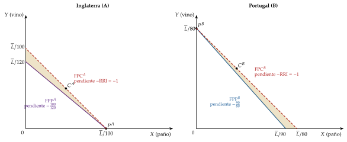
Fuente: elaboración propia a partir de Krugman, Obstfeld y Melitz (2018, cap. 3), con los números de la tabla 2, y de la lección de Khan Academy sobre la ventaja comparativa.
El salario relativo: con A especializado en \(X\) y B en \(Y\), el salario de cada país es el valor de lo que produce un trabajador, \(w^A=p_X/a_X^A\) y \(w^B=p_Y/a_Y^B\), de modo que \[\tag{2} \frac{w^A}{w^B}=\mathrm{RRI}\,\frac{a_Y^B}{a_X^A}\quad\Longrightarrow\quad \frac{a_Y^B}{a_Y^A}=\frac{80}{120}\;<\;\frac{w^A}{w^B}\;<\;\frac{a_X^B}{a_X^A}=\frac{90}{100}.\]
El salario relativo queda entre las productividades relativas en los 2 bienes: Portugal, más productivo en todo, paga salarios más altos (entre un 11 % y un 50 % más).
Inglaterra compite con salarios más bajos, no con mejor técnica. Es la respuesta clásica al argumento de la «mano de obra barata»: un país menos productivo puede exportar porque sus salarios reflejan su productividad.
La ganancia como ahorro de trabajo: Inglaterra puede obtener una unidad de vino de 2 formas, produciéndola (120 unidades de trabajo) o produciendo paño y cambiándolo (\(a_X^A/\mathrm{RRI}=100/\mathrm{RRI}\) unidades). Comerciar le ahorra trabajo siempre que \(\mathrm{RRI}>100/120\), la cota inferior de (1): el comercio es una técnica indirecta de producir lo que se importa.
iii) Implicaciones
¿Por qué se comercia? Porque los precios relativos de autarquía difieren, y difieren por la tecnología.
¿Qué se produce? Con tecnología lineal, cada país se especializa del todo en su bien de ventaja comparativa,10 salvo que sea tan grande que el otro no cubra la demanda mundial; entonces el grande produce los 2 bienes.
¿A qué RRI? El modelo la acota entre los costes comparativos, pero no la determina: al estar centrado en la oferta, le falta la demanda (II; con el ejemplo de Ricardo, en el anexo B).
¿Quién gana? Los 2 países (o, con un país grande, uno gana y el otro no pierde), y cada uno gana más cuanto más se aleja la RRI de su precio de autarquía.11 Como solo hay un factor, no hay perdedores dentro de cada país: el modelo no puede tratar el reparto de la renta, y esa es la puerta a los modelos con más factores (III).
El país grande: cuándo la especialización no es completa.
Si un país es pequeño en relación con el otro, su producción especializada puede no bastar para cubrir la demanda del país grande. Entonces el país pequeño se especializa del todo, pero el grande tiene que seguir produciendo algo del bien en el que no tiene ventaja comparativa.
En ese caso la RRI coincide con el coste comparativo del país grande: produce los 2 bienes, comercia a su precio de autarquía y no gana nada; toda la ganancia va al pequeño.
Para saber cuál de los 2 casos se da hay que incluir la demanda, las curvas de indiferencia de los consumidores, que faltaba en el análisis de Ricardo: en el gráfico 1 los 2 países se especializan del todo, pero con otras preferencias (otras curvas de indiferencia) podría darse el otro caso.
El desarrollo, con el ejemplo de Ricardo, la oferta de exportaciones y la demanda de importaciones de cada país y la oferta relativa escalonada, está en el anexo B: es la misma construcción que, con fronteras cóncavas, da las curvas de oferta neta de Haberler (II).
c) Extensiones
Antes del continuo de bienes, la teoría generalizó a Ricardo a más bienes o más países: la cadena de ventaja comparativa, la frontera mundial con muchos países y el caso general (anexo A).
Dornbusch, Fischer y Samuelson (1977): un continuo de bienes
Idea: Dornbusch, Fischer y Samuelson (1977) sustituyen los 2 bienes por un continuo \(z\in[0,1]\). Así la frontera entre lo que exporta e importa cada país deja de ser fija: la decide el equilibrio, y se puede estudiar cómo la mueven el tamaño, la tecnología o los costes de transporte.
Supuestos: 2 países, A y B, con el trabajo como único factor (\(\overline L^A\), \(\overline L^B\)); requerimientos \(a^A(z)\) y \(a^B(z)\), con los bienes ordenados de modo que la productividad relativa de A, \(a^B(z)/a^A(z)\), sea decreciente en \(z\); preferencias Cobb-Douglas idénticas, con una fracción constante del gasto en cada bien.
Especialización: A produce el bien \(z\) si lo produce más barato, \(w^Aa^A(z)\le w^Ba^B(z)\). El bien frontera \(\tilde z\) cumple \[\tag{3} \frac{w^A}{w^B}=\frac{a^B(\tilde z)}{a^A(\tilde z)},\] decreciente en \(\tilde z\): para producir más bienes, A tiene que ser relativamente más barato. A produce \([0,\tilde z]\) y B, \((\tilde z,1]\).
Demanda: si \(\vartheta(\tilde z)\) es la fracción del gasto mundial en los bienes de A, el equilibrio de la balanza exige \(w^A\overline L^A=\vartheta(\tilde z)\,(w^A\overline L^A+w^B\overline L^B)\), es decir, \[\tag{4} \frac{w^A}{w^B}=\frac{\vartheta(\tilde z)}{1-\vartheta(\tilde z)}\,\frac{\overline L^B}{\overline L^A},\] creciente en \(\tilde z\): si A produce más bienes, se demanda más su trabajo.
Equilibrio: el corte de (3) y (4) fija a la vez el salario relativo y el patrón de especialización (gráfico 2). La demanda, que en Ricardo faltaba, entra aquí de forma natural.
Implicaciones:
si crece la población de A, su salario relativo baja y A produce más bienes;
un progreso técnico uniforme en A sube su salario relativo y le da algunos bienes más;
con costes de transporte de tipo iceberg aparece una banda de bienes no comerciables, que cada país produce para sí.
Valoración: conserva la sencillez de Ricardo y la generaliza; es el paso previo a Eaton y Kortum, que lo llevan a muchos países.
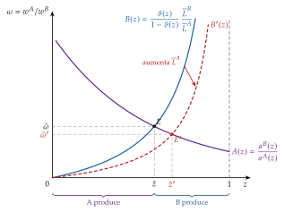
Fuente: elaboración propia a partir de Dornbusch, Fischer y Samuelson (1977).
Eaton y Kortum (2002): Ricardo con muchos países y geografía
Idea: Eaton y Kortum (2002) llevan el continuo de Dornbusch, Fischer y Samuelson a muchos países con costes geográficos de comercio, en competencia perfecta. Es el modelo de Ricardo que se puede estimar: da una ecuación de gravedad y permite medir las ganancias del comercio [ver tema 3.B.6].
Supuestos: un continuo de bienes \(j\); la productividad de cada país \(i\) en cada bien, \(z_i(j)\), es una variable aleatoria con distribución de Fréchet: \[\tag{5} F_i(z)=\Pr[z_i\le z]=e^{-T_iz^{-\theta}},\qquad T_i>0,\ \theta>1.\]
\(T_i\) es el estado de la tecnología de \(i\): un \(T_i\) mayor desplaza toda la distribución hacia la derecha y da ventaja absoluta;
\(\theta\), común a todos, mide la dispersión: cuanto menor es, más distintas son las productividades entre bienes y más fuerte es la ventaja comparativa.
Desarrollo: el bien \(j\) de \(i\) llega a \(n\) a un precio \(p_{ni}(j)=c_i\tau_{ni}/z_i(j)\), con \(c_i\) el coste del factor y \(\tau_{ni}\ge1\) el coste iceberg (\(\tau_{nn}=1\)), y cada comprador elige al proveedor más barato. La probabilidad de que \(i\) sea el más barato en \(n\) es la parte del gasto de \(n\) en bienes de \(i\): \[\tag{6} \pi_{ni}=\frac{X_{ni}}{X_n}=\frac{T_i\,(c_i\tau_{ni})^{-\theta}}{\sum_k T_k\,(c_k\tau_{nk})^{-\theta}},\] una ecuación de gravedad en la que \(\theta\) es la elasticidad del comercio a sus costes.
Implicaciones: con el trabajo como único factor (\(c_i=w_i\)), la ganancia del comercio frente a la autarquía depende solo de la parte del gasto que se queda en casa, \(\pi_{nn}\): \[\tag{7} \frac{W_n}{W_n^{\mathrm{aut}}}=\pi_{nn}^{-1/\theta}.\] Cuanto más se compra fuera (menor \(\pi_{nn}\)) y menor es \(\theta\), mayor es la ganancia.
Evidencia: lo estiman con el comercio bilateral de manufacturas de 19 países de la OCDE en 1990; su estimación preferida es \(\theta\approx8{,}28\), y con ella simulan contrafactuales: la caída de las barreras geográficas, una mejora tecnológica en un país o el paso a la autarquía.
Valoración: con los mismos datos de la parte del gasto que se queda en casa y de la elasticidad del comercio a sus costes, la ganancia es la misma que en Krugman (1980) o en Melitz con distribución de Pareto [ver tema 3.B.6]: lo que cambia entre modelos es de dónde sale la ganancia y quién gana, no cuánto.
d) Evidencia empírica
La literatura empírica del modelo de Ricardo no es muy extensa: es difícil llevar a los datos un modelo de 2 países con especialización completa y un solo factor.12
MacDougall (1951), con datos de 1937, compara por industrias Estados Unidos y el Reino Unido: con salarios estadounidenses en torno al doble de los británicos, Estados Unidos exporta más que el Reino Unido a terceros mercados en las industrias en que su productividad del trabajo es más del doble de la británica, y menos en las demás. Balassa (1963) llega a resultados parecidos con datos de 1950-1951.
El contraste más directo es un experimento natural: la apertura súbita de Japón en la década de 1860, tras más de 2 siglos de autarquía. Bernhofen y Brown (2004) comprueban que, valorado a los precios de autarquía, el comercio neto de Japón es negativo en todos los años de 1868 a 1875, como predice la ley de la ventaja comparativa (se exporta lo que era barato en autarquía), y Bernhofen y Brown (2005) acotan las ganancias estáticas en no más de un 8-9 % del PIB japonés de la época. Kiyota (2007, 2011) matiza el resultado: con comercio desequilibrado, el contraste exige valorar también el comercio a precios de libre comercio, y entonces la ley no se cumple necesariamente.
Con datos de muchos países: Costinot y Donaldson (2012) miden la productividad de cada cultivo con datos agronómicos, que no dependen de lo que se produce, y la producción sigue la ventaja comparativa; y Costinot, Donaldson y Komunjer (2012) llevan a los datos el modelo de Eaton y Kortum: las diferencias de productividad relativa por sector explican el patrón de exportaciones.
Nunn (2007) amplía la fuente de la ventaja comparativa: la calidad del cumplimiento de los contratos explica más del patrón de comercio que el capital físico y el trabajo cualificado juntos. Es una «tecnología» en sentido amplio.
e) Valoración
Aportación: fija las condiciones necesaria (costes comparativos distintos) y suficiente (una RRI entre ellos) para que el comercio beneficie a los 2 países, y muestra que lo que cuenta es el coste comparativo, no el absoluto.
Limitaciones:
no determina la RRI ni la cantidad intercambiada: un modelo que explica las causas y el patrón del comercio debería explicar también los precios. La limitación pierde peso si, como propone Bhagwati (1964), se lee el modelo de Ricardo como un modelo normativo, pensado para demostrar que el comercio es beneficioso, más que como uno positivo;
la especialización completa y la ausencia de conflicto distributivo, consecuencias de la tecnología lineal y del factor único.
Recapitulación y puente: Ricardo explica por qué se comercia y qué exporta cada país, pero no a qué precio, ni puede decir nada del reparto de la renta dentro de cada país. Para cerrar el modelo hay que introducir la demanda, que es lo que hacen John Stuart Mill y Marshall, y es lo que estudiamos a continuación.
II. Teoría neoclásica (1): determinación de la RRI. Modelo de Haberler
En el cante (6′): la idea, con los 3 avances, Haberler y la demanda recíproca de Mill, con la (8) y el refrán (0′30″); los supuestos (0′30″); autarquía y libre comercio en un solo gráfico que crece por capas, con el triángulo de comercio (1′30″); la construcción de la curva de oferta neta de A y de B, girando la recta de la RRI y llevando cada triángulo al plano del comercio (1′30″); el equilibrio de las 2 curvas, la RRI y su estabilidad (1′); las 4 preguntas, Harrigan en una frase y la valoración (1′). La derivación de Meade y los usos de las curvas de oferta neta no se cantan.
Conclusión anticipada: los neoclásicos generalizan a Ricardo y cierran su modelo. Con costes de oportunidad crecientes la especialización es incompleta, y con la demanda la RRI deja de ser un dato: la fijan juntas la oferta y la demanda de los 2 países, a través de sus curvas de oferta neta, y con ella se reparten las ganancias.
Nexo: una vez visto que el comercio nace de la ventaja comparativa, pasamos a analizar a qué precio se comercia. Los modelos neoclásicos suponen 3 avances respecto a los clásicos:
mejoran el análisis gráfico y matemático;
incorporan la demanda, que fija la RRI;
levantan supuestos restrictivos: el trabajo deja de ser el único factor, lo que traerá ganadores y perdedores dentro de cada país, y la tecnología deja de ser lineal, lo que da una especialización incompleta.
a) Idea
Qué es la RRI: la relación real de intercambio (RRI) es el precio relativo de las exportaciones de un país en términos de sus importaciones, \(\mathrm{RRI}=p_X/p_Y\) para A. Dice cuántas importaciones se obtienen por unidad exportada y, por tanto, cómo se reparten entre los países las ganancias del comercio. La oferta (Ricardo) solo la acota entre los precios de autarquía; su valor exacto lo fija la demanda.
Haberler libera la ventaja comparativa de la teoría del valor trabajo: la reformula con el coste de oportunidad, la pendiente de la frontera de posibilidades de producción, primero en un artículo de 1930 y después en su manual.13
Con varios factores, rendimientos decrecientes de cada uno y la demanda, el comercio puede nacer de la tecnología, de las dotaciones o de los gustos. El modelo es el marco general del que el de Heckscher-Ohlin-Samuelson es un caso particular (III).
La demanda recíproca: John Stuart Mill cierra el hueco de Ricardo con la ecuación de la demanda internacional: la RRI es la que iguala el valor de las exportaciones de cada país con el de sus importaciones, es decir, la que hace que la demanda de cada país por el bien del otro sea exactamente recíproca;.14 Para A, con exportaciones de \(X\) e importaciones de \(Y\):
\[p_X\,(X^A_P-X^A_C)=p_Y\,(Y^A_C-Y^A_P)\tag{8}\]
Es la balanza comercial equilibrada del trueque: el valor de lo que A exporta es el de lo que importa.
Implicación: la RRI se acerca al precio de autarquía del país cuya demanda del bien del otro es más intensa, y el otro se lleva la mayor parte de la ganancia: gana más quien menos necesita al otro. «A buen hambre no hay pan duro»: el país que más necesita el bien del otro acepta una RRI peor. En el ejemplo de Ricardo, si Inglaterra desea mucho el vino portugués, la RRI se acerca a 100/120 y casi toda la ganancia va a Portugal (anexo B).
Marshall da forma gráfica a la demanda recíproca con las curvas de oferta neta, y el modelo de Haberler permite obtenerlas de la producción y de las preferencias de cada país: es lo que se desarrolla a continuación.
b) Modelo
i) Supuestos
2 países (A y B), 2 bienes homogéneos (\(X\) e \(Y\)) y 2 factores (trabajo y capital), homogéneos, divisibles y en cantidad dada, móviles dentro de cada país (largo plazo) e inmóviles entre países.
Tecnología neoclásica: funciones de producción continuas y 2 veces diferenciables, con rendimientos constantes a escala y productividades marginales positivas y decrecientes de cada factor.
Se representa con la frontera de posibilidades de producción (FPP), las cantidades máximas de los 2 bienes que el país puede producir con su tecnología y sus dotaciones: lo que queda fuera no es factible y lo que queda dentro no es eficiente.
A diferencia de la de Ricardo, que era una recta, la FPP es cóncava:15 producir más de un bien cuesta cada vez más del otro. Se obtiene de la curva de contrato de la caja de Edgeworth de la producción [ver tema 3.A.21] [ver tema 3.A.11].
Preferencias sociales: una función de utilidad de buen comportamiento (continua, 2 veces diferenciable, creciente y estrictamente cuasicóncava), representada por curvas de indiferencia social (CIS), tanto más altas cuanto más alejadas del origen.
Competencia perfecta en los mercados de bienes y de factores, y libre comercio sin costes de transporte.
Comercio de trueque, sin dinero, entre 2 países que influyen en los precios mundiales: lo que se determina es un precio relativo, la RRI.
ii) Desarrollo
Paso 1. Un país ante una RRI dada: el triángulo de comercio
Equilibrio de autarquía: la frontera de posibilidades de consumo es la FPP. El equilibrio está en la tangencia de la FPP con la CIS más alta, \(E^A_{\mathrm{aut}}\), donde la relación marginal de transformación (pendiente de la FPP) iguala la relación marginal de sustitución (pendiente de la CIS), \(\mathrm{RMT}_{XY}=\mathrm{RMS}_{XY}\), y se consume lo que se produce. La pendiente común es el precio relativo de autarquía, \((p_X/p_Y)^A_{\mathrm{aut}}\).
Equilibrio de libre comercio: A se enfrenta a una RRI mayor que su precio de autarquía, de modo que \(X\) es más caro fuera que dentro: A exportará \(X\) e importará \(Y\). El país puede ahora separar la producción del consumo:
las empresas producen donde \(\mathrm{RMT}_{XY}=\mathrm{RRI}\), en \(P^A\): más \(X\) y menos \(Y\) que en autarquía;
los consumidores eligen donde \(\mathrm{RMS}_{XY}=\mathrm{RRI}\), en \(C^A\), sobre la recta de la RRI que pasa por \(P^A\) y en una CIS más alta que la de autarquía. No tiene por qué haber más de los 2 bienes: lo que se garantiza es más bienestar;16
la diferencia la cubre el comercio: A exporta \(X^A_P-X^A_C\) de \(X\) e importa \(Y^A_C-Y^A_P\) de \(Y\), los 2 catetos del triángulo de comercio (gráfico 3).17
Las 2 ganancias del comercio: la ganancia del intercambio (consumir a la RRI aun produciendo lo mismo que en autarquía) y la ganancia de la especialización (mover la producción hasta \(\mathrm{RMT}_{XY}=\mathrm{RRI}\)).
Especialización incompleta: como la FPP es cóncava, la tangencia con la RRI queda, por lo general, en un punto interior: cada país sigue produciendo los 2 bienes.
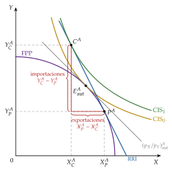
Fuente: elaboración propia a partir de Haberler (1936) y Gandolfo (2014, cap. 3).
Paso 2. De los triángulos de comercio a la curva de oferta neta
La idea: hasta aquí la RRI era un dato. Si se hace girar la recta de la RRI, cada precio da un triángulo de comercio distinto; llevando cada triángulo a un plano en el que solo se miden las exportaciones y las importaciones, sus vértices van trazando la curva de oferta neta (u oferta recíproca, de Marshall (1879)) [ver tema 3.A.3]: para cada RRI, cuánto quiere exportar e importar el país.18
La construcción para A (gráfico 4), por capas:
a la izquierda, el plano de los bienes de Haberler; a la derecha, el plano del comercio, con las exportaciones de A, \(E^A=X^A_P-X^A_C\), en abscisas y sus importaciones, \(M^A=Y^A_C-Y^A_P\), en ordenadas;
autarquía (\(p=1\)): A produce y consume en \(E^A_{\mathrm{aut}}\) y no comercia: en el plano del comercio está en el origen. El rayo con la pendiente del precio de autarquía es la referencia;
una RRI algo mayor (\(p=1{,}5\)): A produce en \(P_1\) y consume en \(C_1\), en una CIS más alta; el triángulo de comercio sombreado tiene por catetos \(E_1\) y \(M_1\), y en el plano del comercio es el punto \((E_1,M_1)\);
una RRI todavía mayor (\(p=2\)): la producción se desplaza a \(P_2\) y el consumo a \(C_2\); el nuevo triángulo es el punto \((E_2,M_2)\);
la curva: uniendo esos puntos, y los de todas las RRI, sale ON\(_A\).
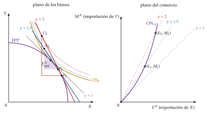
Fuente: elaboración propia a partir de Haberler (1936), Marshall (1879) y Gandolfo (2014, cap. 3).
Cada punto cumple la ecuación de Mill, \(M^A=\mathrm{RRI}\cdot E^A\): está sobre la recta que sale del origen con pendiente igual a la RRI.
Parte del origen, tangente a la recta del precio de autarquía de A (a ese precio no comercia), y se curva hacia el eje del bien importado: cada punto está en una recta más inclinada que el anterior. La de B es la simétrica, con \(Y\) como exportación.19
La construcción para B (gráfico 5): B tiene la FPP sesgada hacia \(Y\) y un precio de autarquía de \(X\) más alto, \((p_X/p_Y)^B_{\mathrm{aut}}=4\). Para B, el comercio conviene si la RRI baja de su precio de autarquía: con \(p=3\) importa algo de \(X\) y exporta \(Y\), y con \(p=2\), más. En el plano del comercio se ponen los mismos ejes que para A (\(X\) en abscisas, \(Y\) en ordenadas), para poder juntar las 2 curvas.
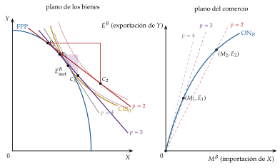
Fuente: elaboración propia a partir de Haberler (1936), Marshall (1879) y Gandolfo (2014, cap. 3).
Su forma depende de la elasticidad de la demanda de importaciones, \(\varepsilon^A_M\) (respecto al precio relativo de las importaciones, en valor absoluto). Como \(E^A=M^A/\mathrm{RRI}\), \[\tag{9} \hat E^A=\hat M^A-\widehat{\mathrm{RRI}}=(\varepsilon^A_M-1)\,\widehat{\mathrm{RRI}}:\]
tramo elástico (\(\varepsilon^A_M>1\)): al mejorar la RRI, el país importa tanto más que también exporta más; la curva sube hacia la derecha;
elasticidad unitaria: las exportaciones no cambian; la curva es vertical;
tramo inelástico (\(\varepsilon^A_M<1\)): el país quiere pocas importaciones más y, como su bien vale más, las consigue con menos exportaciones; la curva se dobla hacia atrás.
Paso 4. El equilibrio: la RRI
El equilibrio: se juntan las 2 curvas en el plano del comercio (gráfico 6). Su corte, \(E\), es el único punto en el que lo que A quiere exportar de \(X\) es lo que B quiere importar, y al revés: los 2 triángulos de comercio son el mismo. La RRI de equilibrio es la pendiente de la recta que une el origen con ese punto; en el ejemplo, \(\mathrm{RRI}=2\), entre los 2 precios de autarquía (1 y 4).
Existencia: las curvas son continuas y parten del origen con pendientes distintas (los 2 precios de autarquía), así que se cortan.
Unicidad: no la garantiza que los bienes sean normales. Si una curva tiene un tramo inelástico, puede cortar a la otra varias veces; los equilibrios se alternan entre estables e inestables, de modo que el equilibrio es único si en todos ellos se cumple la condición de estabilidad.
Estabilidad: la condición de Marshall-Lerner en el trueque, la suma de las elasticidades de la demanda de importaciones de los 2 países mayor que 1, \[\tag{10} \lvert\varepsilon^A_M\rvert+\lvert\varepsilon^B_M\rvert>1,\] la misma condición que, con dinero y tipo de cambio, dice si una depreciación mejora la balanza comercial [ver tema 3.B.12].
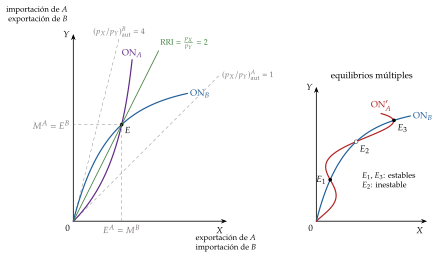
Fuente: elaboración propia a partir de Marshall (1879), Meade (1952) y Gandolfo (2014, cap. 3).
El fundamento de Meade: las curvas de indiferencia comercial. Meade (1952), a partir de Leontief (1933) y Lerner (1934), da a las curvas de Marshall un fundamento en la producción y en las preferencias (gráfico 7). El diagrama de Lerner, con sus figuras, en el Glossary of International Economics de Alan Deardorff.
el bloque de producción (la FPP del país, invertida) se desliza sin girar, tocando siempre la misma CIS; su origen traza una curva de indiferencia comercial (CIC), el lugar de los vectores de comercio \((E^A,M^A)\) que dan al país la misma utilidad;
la CIC tiene pendiente positiva, porque exportar es un coste y para compensarlo hay que importar más, y representa más bienestar cuanto más arriba y a la izquierda está;
la curva de oferta neta es el lugar de las tangencias entre las CIC y las rectas de la RRI que salen del origen: cada punto es un equilibrio del modelo de Haberler (producción con \(\mathrm{RMT}_{XY}=\mathrm{RRI}\) y consumo con \(\mathrm{RMS}_{XY}=\mathrm{RRI}\)), y el bienestar del país se lee en el mismo plano. Es la herramienta que la política comercial usa para el arancel [ver tema 3.B.7].
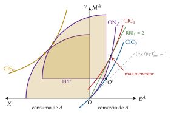
Fuente: elaboración propia a partir de Meade (1952) y Gandolfo (2014, cap. 3).
iii) Implicaciones
¿Por qué se comercia? Porque los precios relativos de autarquía difieren, y pueden diferir por la tecnología, por las dotaciones o por los gustos.
¿Qué se produce? Los 2 bienes: con la FPP cóncava la especialización es incompleta. Cada país exporta el bien que con comercio es más caro que en autarquía.
¿A qué RRI? La del corte de las 2 curvas de oferta neta, que queda entre los 2 precios de autarquía, como en Ricardo, pero ahora determinada: la fijan juntas la oferta y la demanda de los 2 países.
El reparto de las ganancias depende de las elasticidades: cada país gana más cuanto más se aleja la RRI de su precio de autarquía, y se aleja más del precio del país cuya oferta neta es más elástica, el que menos necesita al otro.
El país pequeño: su oferta neta corta la del grande en el tramo en que esta es casi una recta, la del precio de autarquía del grande. El pequeño comercia a ese precio y se queda con toda la ganancia: lo mismo que en Ricardo con el país grande.
¿Quién gana? Cada país en su conjunto (por el intercambio y por la especialización), salvo que la RRI coincida con su precio de autarquía. Con factores agregados, el modelo no dice quién gana dentro del país; puede haber perdedores, como mostrará el modelo con 2 factores (III).
c) Evidencia empírica
El modelo general apenas se ha llevado a los datos: casi toda la evidencia se ha centrado en el de Heckscher-Ohlin, que es un caso particular.
Harrigan (1997), con un panel de 10 países de la OCDE durante 20 años, encuentra que la tecnología relativa (la parte ricardiana) y las dotaciones de factores (la parte de Heckscher-Ohlin) explican juntas la especialización mejor que cada una por separado.
La aplicación más conocida a los datos es la tesis de Prebisch (1949) y Singer (1950): la RRI de los países exportadores de productos primarios frente a las manufacturas tiende a empeorar a largo plazo, y con ella su parte de las ganancias del comercio [ver tema 3.B.9] [ver tema 3.B.28].
d) Valoración
Aportación: es el marco general de la teoría tradicional. Libera la ventaja comparativa del valor trabajo, explica la especialización incompleta y cierra el modelo clásico: la RRI deja de ser un dato, y con ella se explica cómo se reparten las ganancias del comercio entre países.
Usos: cualquier cosa que desplace una curva de oferta neta cambia la RRI y redistribuye las ganancias entre países.
el arancel: para cada RRI, el precio interno pasa a \(p_X/[p_Y(1+t)]\) y la oferta neta del país que lo pone se contrae; un país grande puede mejorar así su RRI (el arancel óptimo) [ver tema 3.B.7], y la respuesta de los demás lleva a la guerra arancelaria [ver tema 3.B.8];
el crecimiento: si un país crece sesgado hacia su bien exportado, su oferta neta se expande y su RRI empeora; si empeora lo bastante, puede quedar peor que antes de crecer, el crecimiento empobrecedor de Bhagwati (1958) [ver tema 3.B.9];
la integración: el poder negociador de una unión aduanera frente al resto del mundo [ver tema 3.B.10];
las transferencias: el debate de Keynes y Ohlin (1929) sobre las reparaciones alemanas (anexo C).
Limitación: al admitir cualquier fuente de diferencias entre países, predice poco sobre qué exporta cada uno, y con factores agregados no dice nada del reparto dentro del país.
Recapitulación y puente: la demanda cierra la RRI y reparte las ganancias entre países. Para saber qué diferencia entre países causa el comercio y quién gana dentro de cada uno hay que precisar qué factores hay: es el modelo de Heckscher-Ohlin-Samuelson, que atribuye el comercio a las dotaciones y que, a corto plazo, con factores que no se mueven entre sectores, da el modelo de factores específicos.
III. Teoría neoclásica (2): dotaciones de factores. Modelo de H-O-S. Teoremas, evidencia y extensiones
13,5
En el cante (13′30″): la idea (0′30″) y los supuestos (1′); los 4 teoremas, numerados y con la primera frase del enunciado dicha tal cual: teorema 1 de Heckscher-Ohlin con las 2 fronteras (1′30″); teorema 2 de Stolper-Samuelson con las curvas de coste unitario y la (11) (1′30″); teorema 3 de la igualación del precio de los factores en el mismo gráfico (1′); teorema 4 de Rybczynski con la caja de los factores y su cadena debajo (1′); las 4 preguntas (0′30″); la paradoja de Leontief, sus salidas y el paso a las extensiones (1′30″); extensiones (4′): HOV y Trefler (0′30″), Jones y Deardorff (0′30″) y factores específicos (3′: la idea y las Leyes de Granos con el refrán, los supuestos, el diagrama de Mussa con la subida de \(p_Y\) en una capa nueva y la cadena (15) al lado, las 4 preguntas y Magee); valoración e influencia (1′). Al terminar el H-O-S y los factores específicos se rellena su fila de la tabla de los modelos. Las cajas grises (el diagrama de Samuelson-Johnson, los cambios de dotaciones de los factores específicos y los otros levantamientos de supuestos), las demostraciones y el detalle de la paradoja (anexos) no se cantan.
Conclusión anticipada: con 2 factores, el comercio tiene una causa nueva, las dotaciones, y un efecto nuevo, el reparto de la renta dentro de cada país. A largo plazo, con los factores móviles entre sectores, gana el factor abundante y pierde el escaso; a corto plazo, con factores específicos, gana el factor específico del sector que se encarece y el móvil queda en medio.
Nexo: el modelo de Haberler admitía cualquier fuente de comercio; el de Heckscher-Ohlin-Samuelson se queda con una sola, las dotaciones, para obtener predicciones firmes. Lo vemos con sus 4 teoremas, la evidencia y las extensiones que levantan sus supuestos.
a) Idea
El modelo lo plantean los suecos Heckscher (1919) y su alumno Ohlin (1933), y lo formaliza Samuelson: Stolper y Samuelson (1941), la igualación del precio de los factores y la reciprocidad; lo completan Rybczynski (1955) y el álgebra de Jones (1965); Ohlin y Samuelson recibieron por ello el Premio Nobel (nota 2).
Idea principal: tecnología y gustos iguales en los 2 países; solo difieren las dotaciones relativas de factores. El país abundante en un factor tiene ventaja comparativa en el bien que lo usa intensivamente.
Es un caso particular del modelo de Haberler con tecnologías y gustos idénticos. Esta pérdida de generalidad es el precio que hay que pagar para obtener predicciones firmes sobre el patrón de comercio y el reparto de la renta.
b) Modelo
i) Supuestos
2 países, 2 bienes y 2 factores (trabajo y capital), con tantos bienes como factores; los factores son móviles dentro de cada país e inmóviles entre países.20
La misma tecnología en los 2 países, con rendimientos constantes a escala y productividades marginales decrecientes.21
Intensidades factoriales sin reversión: un bien es intensivo en capital si usa más capital por trabajador que el otro. Aquí \(X\) es intensivo en capital, \((K/L)_X>(K/L)_Y\), para cualquier relación \(w/r\).22
Preferencias idénticas y homotéticas: a precios dados, los 2 países consumen los bienes en la misma proporción, sea cual sea su renta (las curvas de Engel son rectas desde el origen). Así las diferencias de demanda no pueden compensar las de oferta.
Abundancia relativa: A es abundante en capital, con 2 definiciones que, sin sesgos de demanda, coinciden:23
física: \(\overline K^A/\overline L^A>\overline K^B/\overline L^B\);
por precios: \((w/r)^A>(w/r)^B\) en autarquía (el capital es relativamente más barato en A).
Especialización incompleta antes y después del comercio, competencia perfecta24 y libre comercio sin costes de transporte.
ii) Desarrollo: los 4 teoremas
El modelo da 4 teoremas: uno sobre el patrón de comercio (teorema 1) y 3 sobre los precios de los factores y las cantidades (teoremas 2 a 4), unidos por el efecto magnificación.
Teorema 1: teorema de Heckscher-Ohlin
Enunciado: cada país exporta el bien que usa intensivamente su factor abundante e importa el otro. Inglaterra (A), abundante en capital, exporta paño (\(X\), intensivo en capital); Portugal (B) exporta vino.
Intuición (gráfico 8): con la misma tecnología, la FPP de A está sesgada hacia \(X\) y la de B hacia \(Y\). Con los mismos gustos homotéticos, en autarquía \(X\) es relativamente más barato en A. Con comercio, la RRI queda entre los 2 precios de autarquía: A produce más \(X\) y lo exporta, y B, más \(Y\).25
El consumo: con libre comercio, los 2 países consumen sobre la misma recta que sale del origen, porque tienen las mismas preferencias homotéticas y los mismos precios. Los puntos coinciden solo si los 2 tienen la misma renta: en el gráfico coinciden por simetría, porque las 2 FPP son simétricas y, con \(\mathrm{RRI}=1\), los 2 países tienen la misma renta.
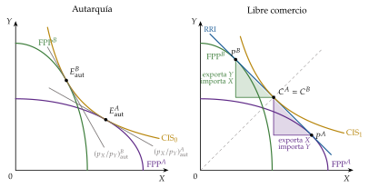
Fuente: elaboración propia a partir de Krugman, Obstfeld y Melitz (2018, cap. 5).
Teorema 2: teorema de Stolper-Samuelson (1941)
Enunciado: si sube el precio relativo de un bien, la remuneración real del factor que usa intensivamente sube, en términos de los 2 bienes, y la del otro factor baja, también en términos de los 2.
Intuición: si sube \(p_Y\) (por ejemplo, por un arancel sobre el vino en Inglaterra), \(Y\) se expande y \(X\) se contrae. \(X\), intensivo en capital, libera más capital por trabajador del que \(Y\) quiere absorber: sobra capital y falta trabajo. Para que haya pleno empleo, \(w/r\) sube y los 2 sectores usan técnicas más intensivas en capital, con lo que la productividad marginal del trabajo sube en los 2 y la del capital baja. Con las curvas de coste unitario (gráfico 9, con la misma geometría que en el equilibrio general, pero con \(X\) e \(Y\) intercambiados [ver tema 3.A.21]), por capas:
en equilibrio, el precio de cada bien es su coste unitario, \(c_X(w,r)=p_X\) y \(c_Y(w,r)=p_Y\): cada curva son las combinaciones de \(w\) y \(r\) con las que el coste unitario del bien es igual a su precio;
la de \(X\), intensivo en capital, es más empinada en el corte; las 2 se cortan en un solo \((w,r)\);
si sube \(p_Y\), la curva \(c_Y=p'_Y\) se desplaza hacia fuera en la misma proporción, y el nuevo corte tiene más \(w\) (sube más que \(p_Y\)) y menos \(r\).
El álgebra de Jones [ver tema 3.A.21]: en tasas de variación, \(\hat p_j=s_{Lj}\hat w+s_{Kj}\hat r\), con \(s_{Kj}\) la participación del capital en el coste de \(j\); cada \(\hat p_j\) es una media ponderada de \(\hat w\) y \(\hat r\) (la demostración, en el anexo E). Con \(X\) intensivo en capital (\(s_{KX}>s_{KY}\)), el efecto magnificación: los precios de los factores varían más que los de los bienes,
\[\hat p_Y>\hat p_X\;\Longrightarrow\;\hat w>\hat p_Y>\hat p_X>\hat r\tag{11}\]
Si \(p_X\) no cambia y \(p_Y\) sube un 10 %, \(w\) sube más de un 10 % y \(r\) baja: el salario real sube en términos de \(Y\) y, con más razón, de \(X\).26
Condiciones: especialización incompleta, sin reversión de intensidades y tantos bienes como factores.
Implicaciones: con la apertura sube el precio relativo del bien exportado, de modo que gana el factor abundante y pierde el escaso; la protección, al revés, favorece al factor escaso, el resultado original de Stolper y Samuelson (1941). «No hay rosa sin espinas»: el país gana, pero no todos dentro de él.
En los países en desarrollo, abundantes en trabajo poco cualificado, la apertura favorecería a esos trabajadores;27 es una predicción que las aperturas de los años 80 y 90 en América Latina e India no confirman del todo: subió la prima por cualificación.
En los desarrollados, pierden los trabajadores poco cualificados, que presionan para proteger las manufacturas intensivas en ese trabajo.28
Los ganadores podrían compensar a los perdedores: el segundo teorema fundamental de la economía del bienestar (2TFEB) dice que, con transferencias de suma fija, cualquier reparto eficiente es alcanzable [ver tema 3.A.22]. Pero esas transferencias apenas existen, y sin compensación el criterio de Kaldor-Hicks no basta para decir que el librecambio mejora a todos.
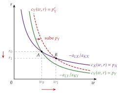
Fuente: elaboración propia a partir de Jones (1965).
Teorema 3: teorema de la igualación del precio de los factores (Samuelson, 1948-1949)
Enunciado: con libre comercio, el comercio de bienes iguala entre países los precios relativos y absolutos de los factores, aunque los factores no se muevan, si no hay costes de transporte, la tecnología es la misma, con rendimientos constantes, no hay reversión de intensidades y los 2 países producen los 2 bienes. Lerner (1952) lo había demostrado en un seminario de 1933, publicado en 1952.
Intuición: «Si la montaña no va a Mahoma, Mahoma va a la montaña»: los factores no viajan, pero viajan los bienes que los llevan dentro.
Con las curvas de coste unitario (gráfico 9): dados los precios, las 2 curvas se cortan en un solo \((w,r)\), que no depende de las dotaciones. Con los mismos precios (libre comercio), la misma tecnología y los 2 bienes producidos, los 2 países tienen el mismo \(w\) y el mismo \(r\).
La condición es que las dotaciones de los 2 países estén dentro del mismo cono de diversificación, el intervalo de dotaciones con el que un país produce los 2 bienes. El diagrama de Samuelson-Johnson lo muestra, y la demostración paso a paso está en el anexo D.
Comercio y movimientos de factores, sustitutivos: Mundell (1957) hace el camino inverso: si un arancel frena el comercio y el capital puede moverse, el capital fluye hacia donde es escaso hasta igualar su renta, y el comercio de bienes desaparece [ver tema 3.B.10] [ver tema 3.B.18].
En la realidad coexisten comercio, migraciones e inversión directa, y los salarios no se igualan: hay costes de transporte y aranceles, tecnologías distintas, especialización completa y más factores que bienes.
La igualación en el diagrama de Samuelson-Johnson.
Johnson (1957) lo representa en 2 cuadrantes con un eje horizontal común, el precio relativo del capital, \(r/w\), con el mismo orden de \(K\) y \(L\) que el resto del tema (gráfico 10). Se dibuja por capas:
cuadrante superior: la \(K/L\) de cada sector, decreciente en \(r/w\) (si el capital se encarece, se usa menos por trabajador); la de \(X\), intensivo en capital, siempre por encima de la de \(Y\), sin cruzarse (sin reversión);
cuadrante inferior (el eje vertical crece hacia abajo): el precio relativo de los bienes, creciente en \(r/w\): cuanto más caro es el capital, más caro es el bien intensivo en capital;
las dotaciones: con la misma tecnología, el gráfico vale para los 2 países. La dotación de cada país, \((\overline K/\overline L)^A\) y \((\overline K/\overline L)^B\), fija el intervalo de \(r/w\) con el que produce los 2 bienes, el que va de la curva de \(Y\) a la de \(X\); \((r/w)'\) y \((r/w)''\) delimitan el tramo común a los 2 países;
la RRI de libre comercio: si da un \(r/w\) dentro de ese tramo, \((r/w)^*\), los 2 países tienen el mismo precio relativo de los factores y las mismas \(K/L\) en cada sector.
Cuanto más distintas son las dotaciones, menos probable es que los intervalos se solapen: si no lo hacen, al menos un país se especializa del todo y ni siquiera se iguala el precio relativo de los factores.
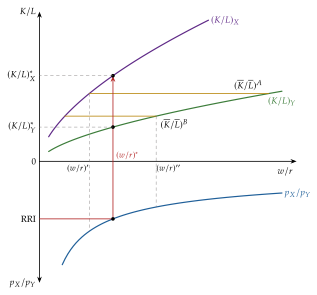
Teorema 4: teorema de Rybczynski (1955)
Enunciado: a precios de los bienes constantes, si aumenta la dotación de un factor (y la del otro no cambia), la producción del bien intensivo en ese factor aumenta más que proporcionalmente y la del otro bien disminuye en términos absolutos. Que los precios de los factores tampoco cambien no es un supuesto, sino una consecuencia: con los precios de los bienes fijos y especialización incompleta, las curvas de coste unitario fijan \(w\) y \(r\).
Intuición (con un aumento de \(\overline K\)): como \(w/r\) no cambia, los 2 sectores mantienen su \(K/L\). La única forma de emplear el capital nuevo es dar más peso a \(X\), que usa más capital por trabajador; pero \(X\) necesita también trabajo, y como la dotación de trabajo no ha cambiado, \(Y\) tiene que cederlo, y con él algo de capital. \(X\) crece más que el capital e \(Y\) se contrae (gráfico 11).
En la caja de Edgeworth de los factores (gráfico 11, con la misma geometría que en el equilibrio general, adaptada a un aumento del capital [ver tema 3.A.21]), por capas: a precios dados, los rayos de \(X\) (desde \(O_X\)) y de \(Y\) (desde \(O_Y\)) mantienen su pendiente, la \(K/L\) de cada sector; al crecer \(\overline K\), la caja crece hacia arriba y el rayo de \(Y\) se traslada con su origen; el nuevo corte queda más lejos de \(O_X\) (más \(X\)) y más cerca del nuevo origen de \(Y\) (menos \(Y\)).29
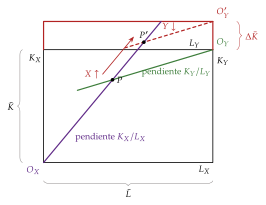
Fuente: elaboración propia a partir de Rybczynski (1955).
Con el álgebra de Jones, con \(\ell_{Kj}\) la fracción del capital empleada en \(j\) y \(\ell_{KX}>\ell_{LX}\) porque \(X\) es intensivo en capital, el efecto magnificación en cantidades: \[\tag{12} \hat{\overline K}>\hat{\overline L}\;\Longrightarrow\;\hat X>\hat{\overline K}>\hat{\overline L}>\hat Y.\] Si solo crece el capital (\(\hat{\overline L}=0\)), \(\hat X>\hat{\overline K}>0>\hat Y\).
Dualidad: Stolper-Samuelson y Rybczynski son el mismo resultado visto desde los precios y desde las cantidades: el efecto de un precio sobre la remuneración de un factor es igual al de la dotación de ese factor sobre la producción del bien (anexo E).
Implicaciones: la FPP de un país abundante en capital está sesgada hacia \(X\), que es lo que explica el teorema de Heckscher-Ohlin; y la acumulación de un factor sesga la oferta y puede empeorar la RRI, hasta el crecimiento empobrecedor (II) [ver tema 3.B.9].
iii) Implicaciones
¿Por qué se comercia? Solo porque difieren las dotaciones relativas.
¿Qué se produce? Los 2 bienes, con más del intensivo en el factor abundante, que es el que se exporta: el comercio de bienes es un intercambio indirecto de factores.
¿A qué RRI? La del corte de las curvas de oferta neta (II), entre los 2 precios de autarquía.
¿Quién gana? El país en conjunto, pero dentro de él ganan los dueños del factor abundante y pierden los del escaso (teorema 2).
c) Evidencia empírica: la paradoja de Leontief y sus salidas
Leontief (1953), con la tabla input-output de Estados Unidos de 1947 [ver tema 3.A.31],30 calcula el capital y el trabajo, directos e indirectos, que harían falta para producir en el país 1 millón de dólares de exportaciones y 1 millón de sustitutos de las importaciones, los bienes importados que la industria nacional también produce.
El resultado: los sustitutos de las importaciones usaban unos 18.184 dólares de capital por año-hombre y las exportaciones unos 13.991, un 30 % más. El país más abundante en capital del mundo parecía exportar trabajo. «Donde menos se piensa, salta la liebre».
Las salidas de la paradoja
El capital humano: las exportaciones de Estados Unidos eran intensivas en trabajo cualificado, y al sumar el capital humano al físico la paradoja desaparece.
Los recursos naturales: muchas importaciones eran intensivas en minerales y tierra, complementarios del capital, que contaban como capital.
El contraste estaba mal planteado: Leamer (1980) muestra que, con comercio desequilibrado, hay que comparar el \(K/L\) de la producción con el del consumo, no el de las exportaciones con el de las importaciones. Con ese criterio, los datos de Leontief revelan que Estados Unidos era abundante en capital: no hay paradoja.
Las demás explicaciones (el año, la productividad del trabajo estadounidense, la reversión de intensidades, los aranceles y los gustos) están en el anexo F.
De la evidencia a las extensiones: cada salida levanta un supuesto del modelo, y por eso la paradoja abrió una agenda de investigación más que refutarlo:
si hay más de 2 factores (capital humano, recursos naturales), lo que se predice es el contenido factorial del comercio: el teorema de Heckscher-Ohlin-Vanek (extensión i);
si hay más de 2 bienes, el patrón de comercio es una cadena de bienes (extensión ii);
si los factores no se mueven entre sectores a corto plazo, el reparto de la renta es por sectores: el modelo de factores específicos (extensión iii);
y si las tecnologías difieren o hay costes de comercio, el modelo se acerca a los datos.
d) Extensiones y levantamiento de supuestos
i) Más de 2 factores: Heckscher-Ohlin-Vanek
El teorema de Heckscher-Ohlin-Vanek (HOV): con muchos factores y bienes, la producción de cada país queda indeterminada a precios dados, pero su contenido factorial no, y lo que se predice es el contenido factorial del comercio neto. Si \(V_k^i\) es la dotación del factor \(k\) en el país \(i\), \(V_k^W\) la mundial y \(\varsigma^i\) la parte de \(i\) en el gasto mundial, el contenido neto exportado del factor \(k\) es \[\tag{13} F_k^i=V_k^i-\varsigma^i\,V_k^W,\] positivo si el país es abundante en ese factor.
La evidencia:
Bowen, Leamer y Sveikauskas (1987), con 27 países y 12 factores en 1967: el contenido factorial del comercio predice mal la abundancia relativa;
Trefler (1995), el comercio que falta: el contenido factorial del comercio es mucho menor que el predicho, y el ajuste mejora mucho si se admiten diferencias de productividad entre países y un sesgo hacia lo nacional;
Davis y Weinstein (2001): con tecnologías distintas, bienes no comerciables y costes de comercio, el modelo funciona bien en los países de la OCDE;
Romalis (2004): los países abundantes en capital y trabajo cualificado exportan más en las industrias intensivas en esos factores, y los que los acumulan desplazan hacia ellas sus exportaciones (Rybczynski en los datos); y Schott (2004): la especialización se ve dentro de cada producto, en las variedades de mayor valor unitario.
Conclusión: en su forma pura, con tecnología común, el modelo predice mal; con diferencias tecnológicas y costes de comercio, las dotaciones explican buena parte del patrón de comercio.
ii) Más de 2 bienes: Jones y Deardorff
Más de 2 bienes: la cadena. Jones (1956) ordena los bienes por su intensidad en capital: el país abundante en capital exporta los de arriba de la cadena e importa los de abajo, y dónde se corta lo decide la demanda.
Más de 2 países: los eslabones débiles. Deardorff (1979) muestra que, si los precios de los factores no se igualan, la cadena se cumple con libre comercio y solo bienes finales, y también si hay costes de comercio o bienes intermedios, pero puede romperse si hay las 2 cosas.
iii) Sin movilidad interna perfecta de los factores (corto plazo): factores específicos (Ricardo-Viner)
Idea
La pregunta: ¿quién gana y quién pierde con el comercio a corto plazo, cuando el capital instalado en un sector no puede irse a otro?
El modelo, llamado de Ricardo-Viner, lo formalizan Jones (1971) y Samuelson (1971), y Mussa (1974) y Neary (1978) lo leen como el corto plazo del de Heckscher-Ohlin-Samuelson: el trabajo se mueve enseguida y el capital, con el tiempo.
El contexto: en la derogación de las Leyes de Granos de 1846 (I.2), los perdedores fueron los terratenientes, dueños del factor específico del sector que se abría a la competencia. «Cada mochuelo a su olivo»: a corto plazo cada capital se queda en su sector, y su suerte es la de ese sector.
Supuestos
2 bienes, \(X\) e \(Y\), y 3 factores: el trabajo, móvil entre sectores, con \(L_X+L_Y=\overline L\), y un capital específico de cada sector, \(K_X\) y \(K_Y\), en cantidad dada, que no puede cambiar de sector.
Funciones de producción neoclásicas, \(X=F_X(L_X,K_X)\) e \(Y=F_Y(L_Y,K_Y)\), con rendimientos constantes en los 2 factores de cada sector y, por tanto, productividad marginal del trabajo decreciente en cada uno.
Competencia perfecta y pleno empleo. Los países pueden diferir en tecnología o en la dotación de cualquiera de los 3 factores.
Desarrollo
El mercado de trabajo: cada sector contrata hasta que el valor del producto marginal del trabajo iguala el salario y, como el trabajo se mueve, el salario es el mismo en los 2 sectores: \[\tag{14} w=p_X\,\mathrm{PMg}_L^X=p_Y\,\mathrm{PMg}_L^Y,\qquad L_X+L_Y=\overline L.\] En el diagrama de Mussa (1974) (gráfico 12), la demanda de trabajo de \(X\) se mide desde la izquierda y la de \(Y\) desde la derecha; su corte da \(w\) y el reparto del trabajo. Cada capital cobra lo que queda, el área bajo su curva y por encima de \(w\), de modo que \(r_X\) y \(r_Y\) son distintas. La FPP es cóncava, porque la productividad marginal del trabajo cae en cada sector.
Sube el precio de un bien: si \(p_Y\) sube y \(p_X\) no cambia, la curva \(p_Y\,\mathrm{PMg}_L^Y\) sube en la misma proporción, el trabajo pasa de \(X\) a \(Y\) y el salario sube, pero menos que \(p_Y\). En tasas de variación: \[\tag{15} \hat r_Y>\hat p_Y>\hat w>\hat p_X=0>\hat r_X.\]
el capital del sector que se encarece gana en términos de los 2 bienes, y el del otro sector pierde en términos de los 2;
el salario real sube en términos de \(X\) y baja en términos de \(Y\): el efecto sobre el trabajador es ambiguo y depende de lo que consume.
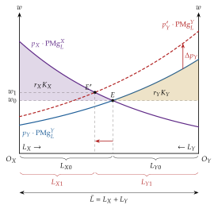
Fuente: elaboración propia a partir de Mussa (1974) y Krugman, Obstfeld y Melitz (2018, cap. 4).
Cambios en las dotaciones en el modelo de factores específicos.
A precios dados, en el diagrama de Mussa:
si aumenta \(K_Y\) (gráfico 13), sube la productividad marginal del trabajo en \(Y\) y su curva \(p_Y\,\mathrm{PMg}_L^Y\) se desplaza hacia arriba; el trabajo pasa a \(Y\), sube el salario y bajan las 2 rentas del capital: la de \(Y\), porque hay más capital por trabajador en \(Y\), y la de \(X\), porque le queda menos trabajo con el mismo capital;
si aumenta \(\overline L\) (gráfico 14), se ensancha la base del diagrama; el salario baja, los 2 sectores emplean más trabajo y suben las 2 rentas del capital.
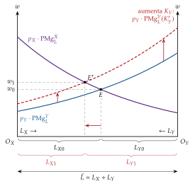
Fuente: elaboración propia a partir de Krugman, Obstfeld y Melitz (2018, cap. 4).
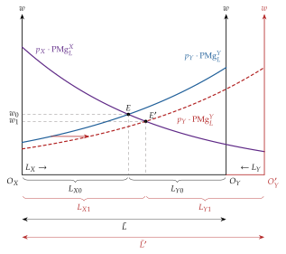
Fuente: elaboración propia a partir de Krugman, Obstfeld y Melitz (2018, cap. 4).
Implicaciones: las 4 preguntas
¿Por qué se comercia? Porque difieren los precios de autarquía, por la tecnología o por la dotación de cualquiera de los 3 factores: un país con mucho capital específico en \(X\) tiene \(X\) barato en autarquía.
¿Qué se produce? Los 2 bienes; la apertura desplaza la producción hacia el exportado, sin especialización completa.
¿A qué RRI? La del corte de las curvas de oferta neta (II), como en el modelo de Haberler.
¿Quién gana? El país en su conjunto, pero dentro de él gana el capital del sector exportador, pierde el del sector que compite con las importaciones y el trabajo queda en medio. Los intereses se organizan por sector, no por factor: trabajadores y empresarios de una misma industria piden juntos protección, la base de los modelos de grupos de presión [ver tema 3.B.8].
Extensiones
Del corto al largo plazo: si el capital se mueve poco a poco hacia el sector que rinde más, las rentas del capital se igualan y el modelo converge al de Heckscher-Ohlin-Samuelson. Un mismo cambio de precios beneficia a corto plazo a todo el capital del sector que se encarece y, a largo, al factor en que ese sector es intensivo.
La enfermedad holandesa: el auge de un sector de recursos naturales sube los salarios y encoge el resto de los sectores comerciables con la misma lógica [ver tema 3.B.9].
Evidencia empírica
S. P. Magee (1980): en los testimonios ante el Congreso de Estados Unidos sobre la reforma comercial de 1973, el capital y el trabajo de una misma industria defendieron la misma postura en 19 de 21 sectores, como predice el modelo de factores específicos; solo 2 de 21 encajan con Stolper-Samuelson, que los enfrentaría.
Grossman y Levinsohn (1989): la rentabilidad bursátil de las industrias de Estados Unidos reacciona a los precios de las importaciones que compiten con ellas, señal de que el capital es específico a corto plazo.
Kovak (2013): en la liberalización de Brasil de los años 90, los salarios crecieron menos en las regiones más expuestas a la rebaja de aranceles, con la medida de exposición que da el modelo de factores específicos.
Valoración
Es el modelo más adecuado para el reparto de la renta a corto plazo, y explica por qué la oposición al comercio se organiza por sectores y regiones.
Como hay más factores (3) que bienes (2), no hay una relación uno a uno entre los precios de los bienes y los de los factores: no hay igualación del precio de los factores, y los teoremas de Stolper-Samuelson y de Rybczynski no se cumplen en su forma fuerte. A largo plazo, cuando el capital se mueve, vuelve el modelo de Heckscher-Ohlin-Samuelson.
Otros levantamientos de supuestos.
Reversión de las intensidades (nota 22): el teorema de Heckscher-Ohlin puede fallar para uno de los 2 países y no hay igualación del precio de los factores.
Costes de transporte y bienes no comerciables: los precios de los bienes y de los factores no se igualan del todo y el contenido factorial del comercio es menor que el predicho; con costes de transporte puede haber incluso comercio en las 2 direcciones de un bien voluminoso.
Diferencias tecnológicas: combinar Ricardo y Heckscher-Ohlin permite explicar comercio intraindustrial con competencia perfecta.
Empresas heterogéneas: con 2 factores y empresas de distinta productividad, la apertura selecciona más en las industrias de ventaja comparativa, lo que amplía las diferencias entre países [ver tema 3.B.6].
e) Valoración
Lo que explica bien: el comercio entre países muy distintos (Norte-Sur), los efectos distributivos del comercio, que ningún modelo de un factor puede tratar, y el comercio como intercambio indirecto de factores, la idea que ordena los debates sobre migraciones e inversión directa.
Lo que explica mal: el volumen del comercio entre países parecidos, el comercio intraindustrial y el comercio que falta; y su predicción más fuerte, la igualación del precio de los factores, no se observa.
Puente: esos fallos los explica la nueva teoría, con rendimientos crecientes y competencia imperfecta [ver tema 3.B.6]; la evidencia moderna reconcilia a las 2: con diferencias tecnológicas, costes de comercio y especialización dentro de cada producto, las dotaciones siguen explicando buena parte del patrón de comercio.
Influencia
En la política comercial: Stolper-Samuelson es la base de la economía política del arancel: por qué se protege a los factores escasos y por qué los perdedores se oponen al librecambio [ver tema 3.B.7] [ver tema 3.B.8].
En el crecimiento: Rybczynski explica el crecimiento sesgado y el empobrecedor [ver tema 3.B.9]; en la integración, la sustituibilidad entre comercio y movimientos de factores [ver tema 3.B.10].
En el debate sobre comercio y desigualdad: Wood (1994) atribuye al comercio con el Sur buena parte de la caída de la demanda de trabajo poco cualificado en el Norte, y el «shock de China» explica en torno a una cuarta parte de la caída del empleo manufacturero de Estados Unidos entre 1990 y 2007, con costes muy concentrados por regiones, más cerca del modelo de factores específicos que del de largo plazo.
En la incidencia fiscal: la misma estructura de 2 bienes y 2 factores es el modelo de incidencia del impuesto de sociedades de Harberger [ver tema 4.B.8].
Recapitulación: con 2 factores, las dotaciones explican el comercio y su reparto: a largo plazo, por factores; a corto plazo, por sectores. Con esto se completa la tabla de los 4 modelos (tabla 3).
Conclusión
Recapitulación:
En conclusión, la teoría tradicional responde a las 4 preguntas del principio con una sola idea, la ventaja comparativa, que cambia de causa según el modelo (tabla 3, la versión «hacia dentro» de la comparación entre la teoría tradicional y la nueva [ver tema 3.B.6]):
con Ricardo, la tecnología; el comercio beneficia a los 2 países aunque uno sea más productivo en todo, y los salarios reflejan la productividad;
con Mill, Marshall y Haberler, la demanda fija la RRI entre los precios de autarquía, en el corte de las curvas de oferta neta: gana más quien menos necesita al otro;
y con 2 factores, las dotaciones (H-O-S): a largo plazo gana el factor abundante y pierde el escaso; a corto, con factores específicos, gana el factor específico del sector que se encarece.
Relevancia:
El matemático Stanislaw Ulam retó a Samuelson a citar una proposición de las ciencias sociales que fuera a la vez verdadera y no trivial; años después, Samuelson respondió con la ventaja comparativa: «que es lógicamente verdadera no hace falta argumentarlo ante un matemático; que no es trivial lo atestiguan los miles de hombres importantes e inteligentes que nunca han sido capaces de entenderla por sí mismos o de creérsela después de que se la explicaran».
Sus resultados distributivos explican por qué el librecambio, que beneficia al país, tiene siempre detractores.
Extensiones:
La política comercial y el arancel óptimo [ver tema 3.B.7], la política comercial estratégica [ver tema 3.B.8], los efectos dinámicos y el crecimiento [ver tema 3.B.9], la integración [ver tema 3.B.10] y, para lo que estos modelos no explican, el comercio intraindustrial entre países parecidos, la nueva teoría [ver tema 3.B.6].
Opinión:
La nueva teoría no sustituye a la tradicional, la completa: la ventaja comparativa sigue explicando el comercio entre países distintos y quién gana y quién pierde con él, y los modelos cuantitativos actuales, como el de Eaton y Kortum, son ricardianos.
Idea final:
«El que mucho abarca, poco aprieta»: el país que no intenta producirlo todo y se especializa en su ventaja comparativa gana, y Ricardo añadió que le conviene aunque lo haga todo mejor (o peor) que los demás.
Pero la especialización tiene perdedores dentro del país: el dueño del factor escaso y, a corto plazo, el del capital atado al sector que compite con las importaciones.
Los países comercian porque son distintos y ganan haciéndolo; que ganen todos sus ciudadanos depende de lo que se haga con esas ganancias.
| ¿Por qué se comercia? | ¿Qué se produce? | ¿A qué RRI? | ¿Quién gana? | |
|---|---|---|---|---|
| Ricardo (I.2) | Tecnologías distintas | Especialización completa | Entre los costes relativos; no la fija | Los 2 países y todos dentro (un solo factor) |
| Haberler (II) | Tecnología, dotaciones y gustos | Especialización incompleta | La fijan las curvas de oferta neta | Los 2 países; dentro, puede haber perdedores |
| H-O-S (III) | Dotaciones relativas | Incompleta: más del bien intensivo en el factor abundante | Curvas de oferta neta | El factor abundante; pierde el escaso (Stolper-Samuelson) |
| Factores específicos (corto plazo del H-O-S) | Dotaciones, también de los factores específicos | Incompleta | Curvas de oferta neta | El factor específico del sector que se encarece; el móvil, ambiguo |
Fuente: elaboración propia.
A. Anexo: extensiones del modelo de Ricardo a más bienes o más países
Se usan \(m\) para el número de bienes y \(n\) para el de países, con un solo factor, el trabajo.
\(m\) bienes y 2 países: la cadena de ventaja comparativa (gráfico 15). Se ordenan los bienes por la productividad relativa de A: \[\frac{a_1^B}{a_1^A}>\frac{a_2^B}{a_2^A}>\dots>\frac{a_m^B}{a_m^A}.\] El salario relativo \(w^A/w^B\) corta la cadena: A produce y exporta los bienes con \(a_j^B/a_j^A>w^A/w^B\), y B los demás. Dónde se corta lo decide la demanda, como en el continuo de Dornbusch, Fischer y Samuelson (3), que es su límite.
2 bienes y \(n\) países: la frontera mundial (gráfico 16). Si se ordenan los países por su coste comparativo \(a_X^i/a_Y^i\), la frontera de posibilidades de producción mundial es una poligonal cóncava: cada tramo corresponde a un país que produce los 2 bienes, y cada vértice, a una especialización completa. La RRI de equilibrio coincide con el coste comparativo de un país (el que produce los 2 bienes) o queda entre 2 consecutivos: a lo sumo un país produce los 2 bienes.
\(m\) bienes y \(n\) países (gráfico 17). Ya no hay una cadena sencilla. Con salarios dados, cada bien lo produce el país con menor \(w^ia_j^i\), y la asignación es eficiente si no se puede ahorrar trabajo intercambiando bienes entre países: si el producto de los requerimientos de la asignación no supera el de ninguna permutación. El diagrama de Viner lo muestra con una escala de costes relativos por país.
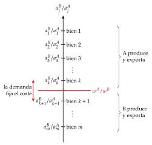
Fuente: elaboración propia a partir de Gandolfo (2014, cap. 2).
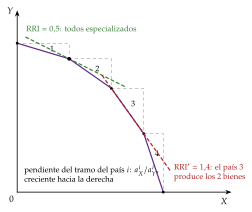
Fuente: elaboración propia a partir de Gandolfo (2014, cap. 2).
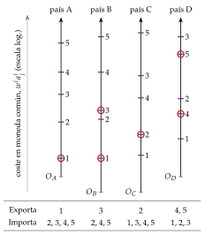
Fuente: elaboración propia a partir de Gandolfo (2014, cap. 2).
B. Anexo: la RRI con el ejemplo de Ricardo
Es el caso de la caja gris del país grande (I.2) y la misma lógica que las curvas de oferta neta de Haberler (II), con fronteras lineales: para cada precio relativo, cuánto quiere exportar cada país.
La oferta de exportaciones y la demanda de importaciones (gráfico 18), con los números de la tabla 2, la misma dotación de trabajo en los 2 países (\(\overline L=2.400\)) e Inglaterra gastando la mitad de su renta en paño y Portugal el 40 %. Por capas:
Inglaterra: si \(p_X/p_Y<100/120\) no produce paño; si \(p_X/p_Y=100/120\) le da igual producir paño o vino, y puede exportar cualquier cantidad de paño hasta 12 (tramo horizontal); por encima se especializa en paño (24 unidades), consume 12 y exporta 12 (tramo vertical);
Portugal: si \(p_X/p_Y=90/80\) le da igual producir paño o vino (tramo horizontal); por debajo se especializa en vino (30 unidades) y demanda \(12/(p_X/p_Y)\) de paño importado;
el equilibrio: las 2 curvas se cortan en \(\mathrm{RRI}=1\), con 12 de paño cambiados por 12 de vino: los 2 países se especializan del todo y ganan (los consumos \(C^A\) y \(C^B\) del gráfico 1);
el país grande: si Inglaterra fuera mucho más grande, su tramo horizontal llegaría más lejos y cortaría la demanda portuguesa en \(p_X/p_Y=100/120\): la RRI sería su coste comparativo, seguiría produciendo los 2 bienes y no ganaría nada.
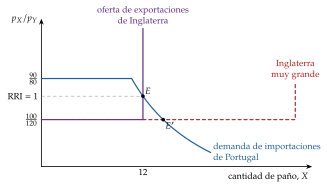
Fuente: elaboración propia a partir de Feenstra y Taylor (2014, cap. 2), con los números de la tabla 2.
La oferta relativa mundial: lo mismo se ve con la oferta relativa mundial de paño, \((X^A+X^B)/(Y^A+Y^B)\), es una escalera (gráfico 19):
si \(p_X/p_Y<a_X^A/a_Y^A\), nadie produce \(X\);
si \(p_X/p_Y=a_X^A/a_Y^A\), Inglaterra es indiferente y la oferta relativa es horizontal;
entre los 2 costes comparativos, cada país se especializa y la oferta relativa es vertical en \((\overline L^A/a_X^A)/(\overline L^B/a_Y^B)\);
si \(p_X/p_Y=a_X^B/a_Y^B\), vuelve a ser horizontal.
La RRI está donde la demanda relativa mundial corta esa escalera. Si la corta en el tramo vertical, los 2 países se especializan del todo y ganan; si la corta en un tramo horizontal (un país muy grande), la RRI es el coste comparativo del país grande, que sigue produciendo los 2 bienes y no gana.
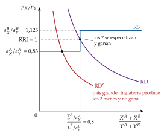
Fuente: elaboración propia a partir de Krugman, Obstfeld y Melitz (2018, cap. 3), con los números de la tabla 2.
C. Anexo: el problema de las transferencias (Keynes y Ohlin)
El debate: tras la Primera Guerra Mundial, Alemania debía pagar reparaciones. Keynes (1929a) sostuvo que, además de la carga directa, la transferencia exigiría una carga secundaria: para obtener las divisas, Alemania tendría que abaratar mucho sus exportaciones, es decir, empeorar su RRI, y con elasticidades bajas eso era casi imposible [ver tema 3.A.4].
La respuesta: Ohlin (1929), en el número de junio del Economic Journal, objetó que Keynes razonaba en equilibrio parcial y olvidaba el efecto renta: la transferencia reduce el gasto en Alemania, que importará menos, y lo aumenta en los receptores, que comprarán más, también bienes alemanes. Parte del ajuste se hace sin cambiar los precios. Keynes replicó en el mismo número.
La solución: en un modelo de 2 países sin costes de transporte, la RRI del que paga empeora si y solo si la suma de las propensiones marginales a importar de los 2 países es menor que 1; no hay presunción en ningún sentido.
La paradoja de la transferencia: Leontief (1936) mostró que el que paga podría incluso acabar ganando, si la mejora de su RRI supera la transferencia; con 2 países y mercados estables no puede ocurrir, pero sí con terceros países o con distorsiones.
Se estudia con las curvas de oferta neta (II): la transferencia desplaza las 2 curvas, y su efecto sobre la RRI depende de las propensiones a gastar en cada bien [ver tema 3.B.12].
D. Anexo: la igualación del precio de los factores, paso a paso
Demostración
El libre comercio iguala el precio de cada bien entre países (ley del precio único): \(p_X^A=p_X^B\) y \(p_Y^A=p_Y^B\), y con ellos el precio relativo.
Sin reversión de intensidades, hay una relación unívoca entre el precio relativo de los bienes y el de los factores: \((w/r)^A=(w/r)^B\).
Con la misma tecnología, el mismo \(w/r\) da las mismas proporciones de factores en cada sector: \((K/L)_X^A=(K/L)_X^B\) y \((K/L)_Y^A=(K/L)_Y^B\).
Con rendimientos constantes, las productividades marginales son homogéneas de grado 0: dependen solo de \(K/L\), y son iguales en los 2 países.
Con competencia perfecta, cada factor cobra el valor de su producto marginal, \(w=p_X\,\mathrm{PMg}_L^X\) (y lo mismo en \(Y\) y para \(r\)); como los precios y las productividades marginales coinciden, \(w^A=w^B\) y \(r^A=r^B\): se igualan también los precios absolutos. Hacen falta la especialización incompleta (todas las productividades marginales positivas) y la ausencia de reversión.∎
Reversión de intensidades y coeficientes fijos
Reversión (gráfico 20): con rendimientos constantes, todas las isocuantas de un bien tienen la misma forma y se pueden comparar las unitarias de los 2 bienes. Si se cortan una vez, no hay reversión; si se cortan \(n\) veces, hay \(n-1\) reversiones. Ocurre cuando una isocuanta es mucho más curva que la otra, es decir, cuando la elasticidad de sustitución de un bien es mucho menor. Con reversión no hay una relación unívoca entre precios de bienes y de factores, y la igualación del precio de los factores no se da necesariamente.
Coeficientes fijos (gráfico 21): con la tecnología de Leontief [ver tema 3.A.11], cada factor da una restricción lineal y la FPP es la poligonal de 2 tramos que queda por debajo de las 2.
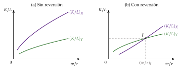
Fuente: elaboración propia a partir de Minhas (1962).
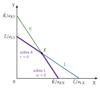
Fuente: elaboración propia a partir de Krugman, Obstfeld y Melitz (2018, cap. 5).
E. Anexo: el álgebra de Jones y la reciprocidad
El álgebra de Jones con \(X\) intensivo en capital
Precios: con competencia perfecta, \(p_j=a_{Lj}w+a_{Kj}r\). Diferenciando, y como la minimización de costes hace que \(w\,da_{Lj}+r\,da_{Kj}=0\) (lema de Shephard), \[\tag{16} \hat p_X=s_{LX}\hat w+s_{KX}\hat r,\qquad \hat p_Y=s_{LY}\hat w+s_{KY}\hat r,\] con \(s_{Kj}=ra_{Kj}/p_j\) y \(s_{Lj}=1-s_{Kj}\). Restando, \(\hat p_X-\hat p_Y=(s_{KX}-s_{KY})(\hat r-\hat w)\), con \(0<s_{KX}-s_{KY}<1\). Si \(\hat p_Y>\hat p_X\), entonces \(\hat w>\hat r\); y como cada \(\hat p_j\) es una media ponderada de \(\hat w\) y \(\hat r\), queda entre los 2: \(\hat w>\hat p_Y>\hat p_X>\hat r\), la (11).∎
Cantidades: con \(w/r\) fijo, los requerimientos no cambian, y el pleno empleo, \(a_{LX}X+a_{LY}Y=\overline L\) y \(a_{KX}X+a_{KY}Y=\overline K\), da \[\tag{17} \hat{\overline L}=\ell_{LX}\hat X+\ell_{LY}\hat Y,\qquad \hat{\overline K}=\ell_{KX}\hat X+\ell_{KY}\hat Y,\] con \(\ell_{Kj}\) la fracción del capital empleada en \(j\). Restando, \(\hat{\overline K}-\hat{\overline L}=(\ell_{KX}-\ell_{LX})(\hat X-\hat Y)\), con \(\ell_{KX}>\ell_{LX}\); y cada dotación es una media ponderada de \(\hat X\) e \(\hat Y\): si \(\hat{\overline K}>\hat{\overline L}\), \(\hat X>\hat{\overline K}>\hat{\overline L}>\hat Y\), la (12).∎
Reciprocidad: sea \(G(p_X,p_Y,\overline L,\overline K)\) el valor máximo de la producción (el PIB) a esos precios y dotaciones. Por el teorema de la envolvente, \(\partial G/\partial p_j\) es la producción de cada bien, y \(\partial G/\partial\overline L=w\), \(\partial G/\partial\overline K=r\). Como las derivadas cruzadas de \(G\) son iguales, \[\tag{18} \frac{\partial w}{\partial p_Y}=\frac{\partial Y}{\partial \overline L},\qquad \frac{\partial r}{\partial p_X}=\frac{\partial X}{\partial \overline K}:\] el efecto de un precio sobre la remuneración de un factor (Stolper-Samuelson) es igual al de la dotación de ese factor sobre la producción del bien (Rybczynski), para cualquier par bien-factor y con el mismo signo. La versión con \(w_L\) y \(w_K\) está en un anexo de la teoría del equilibrio general [ver tema 3.A.21].
F. Anexo: la paradoja de Leontief en detalle
Problemas de medición:
el año: 1947, recién acabada la guerra, era un año atípico; Leontief (1956) lo repite con datos de 1951 y la paradoja se mantiene;
la productividad del trabajo: Leontief propuso que un trabajador estadounidense equivalía a 3 extranjeros, de modo que, en «trabajadores equivalentes», Estados Unidos sería abundante en trabajo;31 Kreinin (1965) estima que era, como mucho, un 25 % más productivo: lejos del triple;
Supuestos que no se cumplen:
más de 2 factores: los recursos naturales y el capital humano;
reversión de las intensidades: un mismo bien puede ser intensivo en capital en un país y en trabajo en otro; Leontief (1964) discute que las reversiones sean frecuentes;
la política comercial: los aranceles de Estados Unidos protegían sobre todo los bienes intensivos en trabajo poco cualificado, lo que sesgaba las importaciones hacia los intensivos en capital;
tecnologías y gustos distintos: con tecnologías distintas o un sesgo de la demanda de Estados Unidos hacia los bienes intensivos en capital, la predicción cambia (nota 23).
Resumen: la paradoja abrió una agenda de investigación (más factores, contenido factorial, diferencias tecnológicas) más que refutar el modelo; con los criterios de Leamer y Trefler, las dotaciones explican parte del comercio, pero no todo (III).
G. Anexo: el comercio exterior de España y su ventaja comparativa revelada
En 2025 España exportó mercancías por 387.092 millones de euros e importó por 444.146 millones, con un déficit de 57.055 millones y una tasa de cobertura del 87,2 %; la Unión Europea recibió el 61,8 % de las exportaciones.
Por secciones de la CUCI (gráfico 22), la maquinaria y el material de transporte (29,1 %), los alimentos (15,9 %) y los productos químicos (15,7 %) encabezan las exportaciones; el superávit se concentra en los alimentos (14.764 millones) y las manufacturas por material (5.736 millones), y el déficit en los combustibles (\(-\)28.562 millones), la maquinaria y el material de transporte (\(-\)27.601 millones) y las manufacturas diversas (\(-\)21.312 millones).
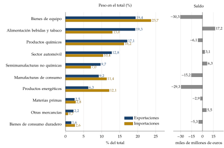
Fuente: elaboración propia con datos de Secretaría de Estado de Comercio (2026) (Secretaría de Estado de Comercio, con datos de la Agencia Tributaria), datos provisionales de 2025. Los totales difieren algo de los del informe mensual de diciembre por las revisiones posteriores.
Con el índice de Balassa (1965), España tiene en 2024 ventaja comparativa revelada en las manufacturas intensivas en trabajo y recursos naturales (1,44) y en las de tecnología media, como el automóvil (1,12), y desventaja en las de cualificación y tecnología alta (0,67); el índice por productos de la UNCTAD da casi lo mismo (1,41, 1,19 y 0,74).
Es el patrón que cabe esperar con Heckscher-Ohlin de un país con más trabajo de cualificación media que los más avanzados, aunque la ventaja en el automóvil refleja también economías de escala e inversión extranjera [ver tema 3.B.6]. Por secciones (gráfico 23), la mayor ventaja está en los aceites y grasas (3,65) y los alimentos (2,15), y la mayor desventaja en los combustibles (0,52).
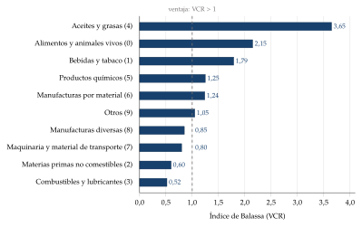
Fuente: elaboración propia con datos de United Nations Statistics Division (2026), exportaciones de 2024.
H. Anexo: preguntas de test
Preguntas tipo test del primer ejercicio: simulador de test.
Bibliografía
Es el índice de ventaja comparativa revelada de Balassa (1965): la sección 4 de la Clasificación Uniforme para el Comercio Internacional (CUCI), «aceites y grasas animales y vegetales», supuso en 2024 el 2,1 % de las exportaciones españolas de bienes y el 0,6 % de las mundiales, un índice de 3,65 (elaboración propia con datos de United Nations Statistics Division (2026); más datos en el anexo G).↩︎
Aunque la teoría ha cambiado mucho en los últimos 50 años, la tradicional sigue siendo complementaria de la moderna: Ohlin recibió el Premio Nobel en 1977, con James Meade, «por su contribución pionera a la teoría del comercio internacional y de los movimientos internacionales de capital», y Samuelson, que formalizó el modelo de Heckscher-Ohlin, lo había recibido en 1970.↩︎
El intercambio es casi tan antiguo como la especialización. La revolución neolítica, el paso de la caza y la recolección a la agricultura y la ganadería, empezó hacia el 10.000 a. C. en el Creciente Fértil. Las primeras aldeas agrarias eran casi autosuficientes, con poca especialización y poco intercambio con el exterior. Más tarde, con la que Childe (1950) llamó revolución urbana, las ciudades de Mesopotamia concentraron el excedente de los campesinos, y con él aparecieron los oficios que no trabajaban la tierra, la especialización social del trabajo y el comercio.↩︎
El comercio internacional había sido objeto de atención antes de que la economía fuera una disciplina autónoma: las ideas mercantilistas de la balanza comercial favorable las rebatió Hume (1752) con el mecanismo de flujo de especie y precios, antes de Smith y Ricardo [ver tema 3.A.2]. Tampoco faltaron argumentos proteccionistas, como la industria naciente de Hamilton (1791) y List (1841) [ver tema 3.B.8].↩︎
En la Riqueza de las naciones, Smith critica con dureza las doctrinas mercantilistas, dominantes entre los siglos XVI y XVIII, por su defensa del proteccionismo [ver tema 3.A.2].↩︎
La ventaja absoluta, y la comparativa que viene después, se pueden contar también en términos de productividad del trabajo: las unidades de un bien que se producen con una hora de trabajo, la inversa del trabajo por unidad.↩︎
El capítulo «On Foreign Trade» es el VII de la 3.ª edición (1821), la que se suele citar; en la 1.ª (1817) es el VI. Antes que Ricardo apuntan la idea un folleto anónimo de 1814, Considerations on the Importation of Foreign Corn, y Torrens (1815); según Grančay y Grančay (2015), sus enunciados son incompletos, y la exposición que queda es la de Ricardo [ver tema 3.A.2]. Ricardo no acuñó el término ventaja comparativa, pero no hay un autor anterior al que pueda atribuirse el principio completo.↩︎
Todos los factores se reducen a uno, el trabajo, como en la teoría clásica del valor. Pero la validez de la teoría del comercio no depende de la del valor trabajo: basta con que los costes unitarios se puedan medir en una unidad común y constante entre países.↩︎
Las 2 fronteras se pueden dibujar también en un solo plano, con la misma dotación de trabajo en los 2 países: la FPP de Portugal queda entera por fuera de la de Inglaterra (ventaja absoluta en los 2 bienes), pero con distinta pendiente (coste comparativo), y cada FPC sale del vértice de especialización con la pendiente de la RRI.
↩︎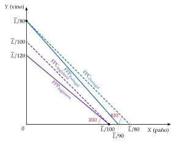
La balanza comercial está equilibrada por construcción: con trueque a la RRI, el valor de las exportaciones es igual al de las importaciones.↩︎
Fuera de este modelo, en su teoría de la distribución, Ricardo añade otra ganancia del libre comercio: evita que haya que cultivar tierras cada vez menos fértiles, con rendimientos decrecientes [ver tema 3.A.2].↩︎
Algunas predicciones del modelo son claramente poco realistas, como la especialización completa que da la productividad marginal constante; pero la básica, que los países exportan los bienes en que su productividad es relativamente alta, la han confirmado varios estudios.↩︎
El manual se publicó en alemán en 1933 (Der internationale Handel); la versión inglesa, de 1936, es la que se cita. El artículo de 1930 no se tradujo al inglés hasta 1985. Una semblanza de Haberler, en el History of Economic Thought Website; cómo se pronuncia su apellido, en Forvo.↩︎
El ejemplo de Mill: si 10 varas de paño cuestan en Inglaterra el trabajo de 15 de lienzo y en Alemania el de 20, la RRI quedará entre 15 y 20 varas de lienzo por cada 10 de paño, y en qué punto dependerá de cuánto desee cada país el bien del otro. Los ensayos de 1844 se escribieron en 1829-1830 [ver tema 3.A.2].↩︎
La FPP puede ser cóncava, lineal o convexa. Con rendimientos decrecientes a escala es estrictamente cóncava. Con rendimientos constantes y funciones con sustitución entre factores, también lo es, salvo que las intensidades factoriales sean iguales en los 2 sectores, y entonces es lineal. Con rendimientos crecientes a escala puede ser convexa.↩︎
Que se consuma menos del bien exportado depende del efecto renta: al subir su precio relativo, el país es más rico, y si el bien exportado es normal el efecto renta empuja a consumir más de él. Lo único seguro es que la nueva cesta está en una curva de indiferencia superior.↩︎
Es la misma geometría que la separación de Fisher entre la producción y el consumo de 2 periodos: con un mercado al que acudir, se produce donde la frontera es tangente al precio y se consume donde lo es la curva de indiferencia [ver tema 3.A.29].↩︎
Para ver. La construcción, animada, en «Animation on How to Offer Curves International Economics Class» (Economicsfun, YouTube): se ve cómo, al girar la recta de la RRI sobre la FPP, el triángulo de comercio se traslada punto a punto al plano de las exportaciones y las importaciones.↩︎
Edgeworth (1894) dibuja también estas curvas, y por eso se habla a veces de las curvas de Marshall-Edgeworth.↩︎
Si los factores pudieran moverse entre países, sustituirían al comercio de bienes: con un arancel, el capital iría adonde es escaso hasta igualar su renta, y el comercio desaparecería.↩︎
Heckscher y Ohlin plantearon el modelo con coeficientes fijos. Con ellos la FPP es una poligonal de 2 tramos: en el vértice se emplean todos los factores, y en cada tramo sobra uno de ellos, cuyo precio es nulo (anexo D).↩︎
Hay reversión si las isocuantas unitarias de los 2 bienes se cortan más de una vez, lo que ocurre cuando sus elasticidades de sustitución son muy distintas: entonces un bien es intensivo en capital a unos precios de los factores y en trabajo a otros, y no hay una relación unívoca entre precios de bienes y de factores (anexo D).↩︎
Si las preferencias no son idénticas y homotéticas, un sesgo de demanda puede invertir el resultado: si el país físicamente abundante en capital demanda mucho el bien intensivo en capital, la renta del capital puede ser más alta que en el otro país; el país es abundante en capital en términos físicos pero escaso por precios, y exporta el bien intensivo en trabajo. Con la definición por precios, el teorema se cumple siempre; con la física, solo sin sesgos de demanda. No es una reversión de las intensidades: es una contradicción entre las 2 definiciones.↩︎
Sin competencia perfecta, los precios relativos no reflejan los costes relativos, y un país abundante en capital no tiene por qué tener más barato el bien intensivo en capital: el teorema de Heckscher-Ohlin no tiene por qué cumplirse [ver tema 3.B.6].↩︎
Los triángulos de comercio de los 2 países son iguales: lo que A exporta de \(X\) es lo que B importa, y al revés.↩︎
Es el error más común con este teorema: confundir el salario real del modelo de Heckscher-Ohlin-Samuelson, que sube en términos de los 2 bienes, con el del modelo de factores específicos, en el que sube en términos de un bien y baja en términos del otro (extensión iii).↩︎
De ahí que en muchos países en desarrollo los dueños del capital se movilicen para que se protejan los bienes de equipo, intensivos en capital: les beneficia a ellos, pero encarece el capital y frena la industrialización.↩︎
Es el caso de los trabajadores industriales (blue collars) en muchos países desarrollados, como Estados Unidos.↩︎
En el plano de los bienes, la FPP se expande sesgada hacia \(X\), y a la misma RRI la nueva tangencia tiene más \(X\) y menos \(Y\).
↩︎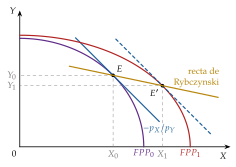
Leontief recibió el Premio Nobel en 1973 «por el desarrollo del método input-output y por su aplicación a importantes problemas económicos».↩︎
«… in any combination with a given quantity of capital, one man-year of American labor is equivalent to, say, three man-years of foreign labor. Then, in comparing the relative amounts of capital and labor possessed by the United States and the rest of the world (…) the total number of American workers must be multiplied by three (…). Spread thrice as thinly as unadjusted figures suggest, the American capital supply per “equivalent worker” turns out to be comparatively smaller, rather than larger, than that of many other countries». Conviene no atribuir esa mayor eficiencia a que haya más capital por trabajador, porque sería una tautología: Leontief la atribuía a la iniciativa empresarial y a la mejor organización, que podrían elevar también la productividad del capital y, si lo hicieran en la misma proporción, la abundancia relativa no cambiaría.↩︎